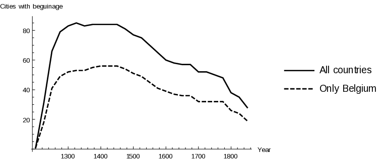
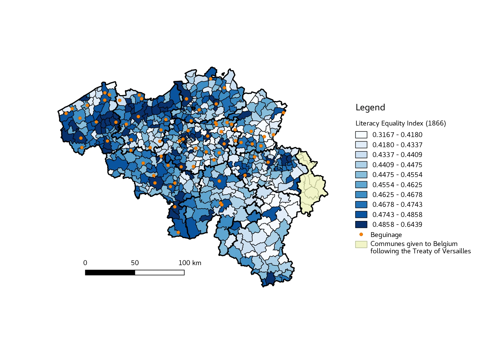
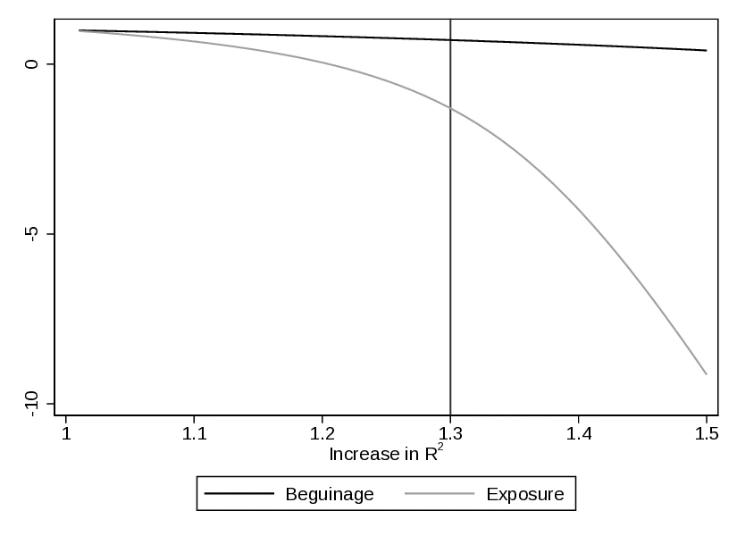
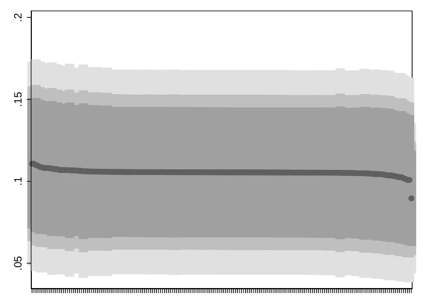
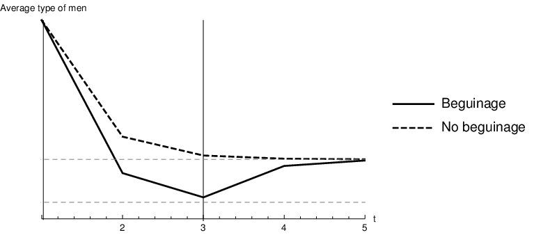

Roots of Gender Equality: the Persistent Effect of Beguinages on Attitudes Toward Women
![]()
This paper is concerned with the historical roots of gender equality. It proposes and empirically assesses a new determinant of gender equality: gender-specific outside options in the marriage market. In particular, enlarging women’s options besides marriage—even if only temporarily—increases their bargaining power with respect to men, leading to a persistent improvement in gender equality. We illustrate this mechanism focusing on Belgium, and relate gender-equality levels in the 19th century to the presence of medieval, female-only communities called beguinages that allowed women to remain single amidst a society that traditionally advocated marriage. Combining geo-referenced data on beguinal communities with 19th-century census data, we document that the presence of beguinages contributed to decrease the gender gap in literacy. The reduction is sizeable, amounting to a 12.3% drop in gender educational inequality. Further evidence of the beguinal legacy is provided leveraging alternative indicators of female agency.
Culture, Institutions, Religion, Gender gap
Acknowledgments
We thank David de la Croix, Matteo Cervellati, Oded Galor, Marc Goñi, Fabio Mariani, Felipe Valencia Caicedo, and all the participants to seminars at Brown University, Université catholique de Louvain, Université du Luxembourg, the Indian Statistical Institute Delhi, Syddansk Universitet and Università Commerciale Luigi Bocconi for precious comments and suggestions. Finally, we thank the editor and three anonymous referees for their comments and suggestions, which have greatly improved the paper. Annalisa Frigo acknowledges the financial support from the Belgian French-speaking Community (convention ARC no15/19-063 on “Family Transformations: Incentives and Norms”). Èric Roca Fernández acknowledges the support received from the Agence Nationale de la Recherche of the French government through the program “Investissements d’avenir” (ANR-10-LABX-14-01) This work was also supported by French National Research Agency Grant ANR-17-EURE-0020.
1 Introduction
The role of women in society is heavily influenced by cultural norms, which prescribe whether they should work, earn income and, in general, enjoy the same rights as men. Moreover, attitudes toward women seem to be very persistent (Fernández and Fogli (2009)) and their origins have been traced back to cultural shocks and gender-specific physiologic endowments —see, among others, Sascha O. Becker and Woessmann (2008), Grosjean and Khattar (2017), and Alesina, Giuliano, and Nunn (2013).
This paper proposes and tests a novel determinant of gender equality based on economic motives: women’s bargaining power in the marriage market. Bargaining power increases with the value of outside options, thus access to better opportunities should relate to an increase in gender equality as women’s negotiating capacity improves. However, this simple argument has not been empirically addressed, probably due to a lack of exogenous variation in outside options.
This study fills this void and illustrates the relevance of such mechanism by focusing on the Belgian context, where the historical presence of medieval, female-only, semi-religious communities called beguinages allowed women to remain single and independent of men in stark contrast to the customs of the time. Beguines enjoyed financial freedom: contrary to traditional monastic orders, retaining and accumulating wealth was permitted and they provided for their communal life with paid occupations, personal funds or both. Combining information on the geographic location of beguinages with Belgian census data, we show that municipalities where beguine communities thrived reached higher levels of gender equality as measured in the mid-19th century. In particular, we find a 12.3% reduction in the gender literacy gap, our preferred measure of gender equality. Alternative demographic indicators also point to increased gender equality. We consider the possibility that beguinal location decisions reflected pre-existing local attitudes by relying on a series of robustness tests. Furthermore, we provide evidence about the relevance of the mechanism, especially compared to competing explanations. In that regard, the presence of female monasteries is also likely to be related to gender equality insofar as it allowed women to decline marriages. As Lawrence (2015, Ch. 4) argues, monasteries for women provided them with a sanctioned option to escape from marriage, thus also increasing the set of outside options available to them. However, as we explain later, important differences existed between the two institutions.1
The two-step mechanism we postulate combines female empowerment through girls’ bargaining power —facilitated by the presence of beguinages— with the intergenerational transmission of a gender-egalitarian culture. Initially, the sheer existence of beguinages provides an additional option to girls: besides marriage or monastic life, they were given the possibility of remaining single. The availability of a viable outside option to marriage improves the bargaining power of women, which in turn brings about a progressive reduction of the gender gap. The improved status of women favours the emergence of more gender-egalitarian norms, which are then perpetuated across generations through a cultural transmission mechanism à la Bisin and Verdier (2001). In that sense, children in towns where beguines located were firstly exposed to beguines themselves, and secondly to peers who were becoming more favourable towards gender-equal norms.
This study supports the idea that gender roles and gender equality are strikingly persistent and determine present-day attitudes towards women.2 However, our explanation departs from those advanced in the existing literature, which typically ascribe the origins of gender roles to gender-based specialisation predating industrialisation. For instance, Alesina, Giuliano, and Nunn (2013) maintain that gender-specific endowments facilitated economic specialisation, prompting gender roles. The comparative advantage of men in manoeuvring the plough explains why the descendants of plough-agriculturalists are today less gender-egalitarian. Similarly, Hansen, Jensen, and Skovsgaard (2015) show that nowadays women work less in societies that transitioned earlier to agriculture. Their proposed channel operates through differential fertility across modes of living, diverting agriculturalist women’s time from market work to childcare. Galor and Weil (1996) propose a theoretical framework encompassing the previous findings. It emphasises the importance of differential physical endowments —in terms of strength— and their complementarity to physical capital. The endowment imbalance between genders generates economic specialisation as long as physical capital is absent, leading to a sharp division of roles: men work and women raise children.
Besides physiological determinants, scholars have shown that certain cultural and economic aspects are associated with a gender bias. Alesina and Giuliano (2010) relate strong family ties to gender inequality, although probably both variables co-evolved.3 Grosjean and Khattar (2017) stress that the historical scarcity of women improved their position in Australia during the 17th and 18th century. Today, these traditional roles persist.4 Similarly, Abramitzky, Delavande, and Vasconcelos (2011) find that when men are underrepresented in the marriage market, they are able to find better spouses and marriages are less likely to dissolve. Fernández and Fogli (2009) analyse the behaviour of second-generation migrants in the US: female labour force participation in the parents’ country of origin explains the behaviour of their daughters. Finally, Giuliano (2018) provides an extensive literature review on the historical origins of gender roles.
By focusing on semi-monastic communities, this paper is also linked to the strand of the literature analysing the legacy of religious institutions on economic performance. For instance, Valencia Caicedo (2018) assesses the positive effects of historical Jesuit Missions in Latin America on modern-day human capital and technological progress. Waldinger (2017) relates the presence of Catholic missions in Mexico to increased literacy and educational attainment. Similar results extend to Protestant missionaries in Africa, such as Cagé and Rueda (2016). Andersen et al. (2017) associate the presence of the industrious Cistercian Order in England with faster productivity growth long after monasteries were disbanded. Finally, Akçomak, Webbink, and Weel (2016) study how a Catholic sect that valued literacy to understand the Gospel —the Brethren of the Common Life— affected Dutch male literacy rates.
Our study is also related to the literature focusing on intra-couple bargaining. Female education reinforces their status and aligns family preferences to women’s, as described by Iyigun and Walsh (2007) and Doepke and Tertilt (2009). Giuliano (2018) argues that matrilineal societies favour gender equality by providing a safety net for women, raising women’s bargaining power. Jayachandran (2015) and Gottlieb and Robinson (2016) shed further light on this hypothesis. We bridge the gap between these two strands of the literature, suggesting that even a temporary improvement in women’s choice set can have long-lasting effects on gender equality.
To the best of our knowledge, this paper is the first to systematically explore the relationship between pre-industrial, female-only urban associations and gender equality in the long run. Our contribution singles out the importance of female associations in improving gender equality, well beyond the life-cycle of the original institutions. Moreover, we propose a novel mechanism based on women’s bargaining power, never explored in this literature, to illustrate the enduring association between female communities and gender equality.
The rest of the paper is organised as follows: Section 2 introduces the historical background of the beguinal movement. Section 3 and Section 4 describe the different data sources and the empirical strategy. The latter is supplemented with robustness tests, including an IV approach. Section 5 discusses the validity of our mechanism and Section 6 concludes.
2 Historical Background
The beguinal movement started in the late 12th century in the Northern Sea region,5 fully flourishing in the next two centuries, and has left several beguinages across the Low Countries, France and Germany.6 It consisted of self-supporting, female-only, semi-religious communities that offered single women of all social strata the opportunity to conduct an independent life as singles in a society that traditionally disapproved of that option.7
Records of pre-beguine communities first appeared around the city of Huy circa 1181. Several analogous groups arose nearby in subsequent years, dotting the region comprising Aachen, Nivelles and Vilvoorde. Simultaneously, two beguinages flourished in Cambrai and Valenciennes —in present-day France—, see Simons (2010, Appendix I). Bowie’s (1990, 14) chronology is similar and also points to the same Belgian region as the cradle of the beguine movement.8 From its early configuration as groups of itinerant, devout women, the movement settled in definitive spaces within towns.
The expansion of beguinages during the middle ages was uneven. Across the Low Countries, after an initial surge, the creation of beguinages stagnated at 20 per decade and then steadily decreased. Overall, 111 cities hosted a beguinage: 70 located in Belgium, 22 in France, 17 in the Netherlands, and 2 in Germany. The number of municipalities that had at least one beguinage over time is depicted in Figure 1 separately for Belgium and all countries. After an initial momentum in the creation of new beguinages, the movement reached its zenith between the 14th and the 16th centuries, when the number of beguinages stabilised. Afterwards, their popularity declined.

Notes: Data on beguinage foundations per decade from Simons (2010), Table 1. Own elaboration. Number of cities with at least one beguinage.
Beguinages differed greatly in terms of the population they hosted. Estimates are scarce but attest to the popularity of the movement.9 For instance, Mechelen’s beguinage hosted up to 1900 beguines in 1500 while that of Nivelles counted 51 beguines in 1284, shortly after its creation. However, historians document a decreasing trend between 1300 and 1900. By the mid-19th century those beguinages still operating counted less than 10 inhabitants.10
Although beguinages were preferentially established in relatively larger towns, communities also settled in hamlets or small boroughs counting less than 200 houses in 1437. This was the case of Bousval, Maleves-Sainte-Marie-Wastinnes, Thorembais-les-Beguines and Grez-Doiceau. At that time, the average town had 187 dwellings,11 and the larger —Brussels, Leuven, and Antwerp— counted 6376, 3579, and 3440 houses.
The beguine movement stands out from other religious communities especially because beguines never constituted an orthodox monastic order.12 Albeit religiosity and pious life guided the beguinages’ foundation and daily routine,13 these communities radically differed from monastic convents. First, beguines did not take poverty vows, allowing them to retain their property and accumulate wealth. Second, they could leave the beguinage at will to marry or to reintegrate the secular society. Family ties were generally maintained.14
Third, these communities were actively involved and well integrated into the everyday social life of medieval cities. As thoroughly depicted by Simons (2010), beguinages attracted women from rural areas who could find work there in a safe and supportive environment. Alongside prosperous beguines lived others of more modest backgrounds who supported themselves as teachers, maids, nurses, textile workers, or small business owners. In fact, while beguines promised to lead a humble life, this did not prevent them from having occupations outside the beguinal walls.15 Beguines served in hospitals and leper houses, and nursing individuals in private homes, both for charitable reasons and to earn a small income. Some beguines were farmers in nearby fields, herded animals or grew vegetables for the local market. The bulk of the evidence, however, suggests that most beguine workers were labourers in the textile industry and earned their living from commerce: for instance, a few traded cloth locally and interregionally in Bruges, Ghent, and Arras, while in Tournai will records provide documentary evidence of a draper employing forty fellow beguines. In fact, acceptance to a beguinage was conditional on possession of personal wealth or willingness to work.
The movement further distinguished itself from Catholic orders because beguines lacked common rules and a central coordinating authority.16 Despite their non-adherence to traditional monastic standards and although communities were independent of any male authority, beguines were tolerated and even granted spaces by the secular society.17 In general, the Holy See and local bishops supported the beguine movement.18 However, the Council of Vienna (1311-12) demonised beguines and the persecution of heretic movements harassed them particularly in the Rhineland region, despite the fact that the beguine movement was never considered as such.19 Accusations did not last long though, and Pope Clement VI completely exonerated the movement from previous charges in 1328. Beguines were also threatened by the Calvinist and iconoclast movements. For instance, in 1567, the beguinage of Hasselt was destroyed by Calvinist partisans. Also, the magistrates of Mechelen burnt down the beguinage of the city —together with other buildings outside the walls— to prevent the Calvinists from using it. In any case, the effects were temporary as beguines rebuilt their beguinages soon after: despite strong initial support, the Reformed cult was banished from Belgium in 1585.20
Beguines’ peculiar freedom of choice and self-determination rapidly propagated and, as soon as 1260, a literary work portrayed the beguines among other religious orders.21 Indeed, beguinages were the forerunners of women’s associations, guaranteeing the necessary social and financial protection for single women who joined the community, in a society where staying single was stigmatised.22 Because of their independence from male authority, Bowie (1990, 13) considered the beguines “the first European women’s movement”.
Finally, De Moor (2014) reviews and dismisses the traditional explanations for the rise and success of the beguine movement. More in detail, the view that beguines sheltered urban girls unable to marry because of skewed urban sex ratios is dubious since most beguines did come from the countryside. Similarly, beguinages were not a substitute for monasteries, as each community located geographically separated and attracted different women. The author evinces that —besides devotional reasons— beguines were often motivated by personal or professional motives. In that sense, joining a beguinage was a deliberate choice to stay single and do remunerated work, independently of a male breadwinner.
3 Data
We combine several data sets to establish an empirical relationship between medieval beguine communities and female agency while accounting for a rich set of potential confounders.
3.1 Historical Presence of Beguines
Beguinage location, foundation and dissolution dates are reported by Simons (2010). The author combines a wide variety of sources to overcome the lack of historical records and the fact that beguinages were rarely established through a formal act of foundation. He documents 143 sites that can be positively defined as beguinages, with few records grouping multiple small beguinages in the same town. Using this information, we compile a new data set that features the exact location of each beguinage and relate it to Belgian municipalities existing in 1866. We restrict our attention to beguinages located within the borders of modern Belgium, where 70 municipalities hosted at least one community.23 Figure 2 depicts their location.24
Ideally, one would like to have information on the number of beguines living in each municipality, but such data is scarce and only available for selected beguinages. We circumvent this limitation by creating two proxy variables that convey the intensive and extensive margin of such presence. The first one is a binary indicator that takes value one when a municipality had, at any point in time and for any duration, at least one beguinage: \[ Beguinage_{i(j)} = \begin{cases} 0 & \text{if } municipality_{i(j)} \text{ never had a beguinage,} \\ 1 & \text{if } municipality_{i(j)} \text{ had at least one beguinage.} \end{cases} \]
The second measure consists of a continuous variable that accounts for different durations (\(t\)) of beguinages (\(k\)) in municipalities (\(i\)). Since it is possible that a municipality hosted more than one beguinage, we aggregate the impact of different beguine communities coexisting or succeeding in the same town in the variable exposure: \[ Exposure_{i(j)}=\sum_{k\in i}t_{i(j),k}. \]

Notes: This map depicts present-day Belgian municipalities. The literacy equality index is computed for each historical municipality during 1866 and aggregated using population-weighted averages for 1866. The lack of precise municipal border information prevents us from displaying the literacy equality index for the towns that existed in 1866. The simplification of the Belgian administration since 1866 has merged many municipalities, creating larger ones, which explains the reduction in their number. Provincial boundaries, however, follow historical limits. Due to the skewness of the data, the map displays it by deciles.
3.2 Census Data
Following G. Bertocchi and Bozzano (2015) and Hippe and Perrin (2017, 170), we use census data to assess gender equality comparing female-to-male literacy rates.25 This source offers widespread coverage and consistent measurement across regions, with a final sample comprising 2447 municipalities with complete information. Data to proxy gender equality with literacy ratios are only available at the municipal level starting from the 1866 census.26 Analysing 19th-century census data mitigates the influence of the labour market and welfare state measures implemented in the following century, especially compulsory education. Also, historical data alleviates the fact that variation in gender norms tends to be confounded over time by other events and institutional shocks.
In the first half of the 19th century, education was not compulsory for children and traditional roles preferentially educated sons over daughters. Therefore, comparing female-to-male literacy rates is meaningful as it reflects how women were perceived with respect to men at a time in which schooling was an expensive investment.27 Locations valuing women comparatively more and equating them to men are expected to educate both genders in similar manners.
We proxy gender equality by taking the ratio of literacy levels between women and men. For each municipality i, it amounts to: \[ literacy\, equality\, index_{i(j)}\, = \frac{Number\, of\, literate\, women_{i(j)}}{Number\, of\, literate\, men_{i(j)}} \]
which relates the number of literate women to the number of literate men.
Alternative definitions of this ratio are considered for sensitivity checks. These are, for each municipality i: \[ female\, literacy\, share_{i(j)}\, = \frac{Number\, of\, literate\, women_{i(j)}}{Number\, of\, literate\, women_{i(j)} + Number\, of\, literate\, men_{i(j)}} \]
recording the share of literate women within the literate population, and \[ female\, literacy\, index_{i(j)}\, = \frac{Share\, of\, literate\, women_{i(j)}}{Share\, of\, literate\, men_{i(j)}} \]
comparing female and male literacy rates. Higher values of any index correspond to more favourable attitudes towards women. Note that the inclusion of men in the denominator is meaningful since plain literacy rates may vary across regions for diverse reasons. Its inclusion smooths out part of these underlying, idiosyncratic characteristics.
The census includes other demographic variables. However, we only use total population because gender-specific characteristics may be an outcome of the presence of beguinages.
3.3 Education Providers
3.3.1 Monasteries
The empirical analysis takes into account the presence of two education providers that promoted literacy and hence could confound our outcome of interest. First, elementary education was traditionally offered almost exclusively by church-related institutions prior to and during the 19th century. According to Ruyskensvelde (2016, 28), schooling became compulsory at the end of the 19th century, whereas previous efforts —notably the Nothomb law of 1842— failed. 28 Our data set documents the presence of monasteries at the municipal level, as they historically provided education and could have fostered human capital in the area.29,30 Information includes monasteries’ foundation and dissolution dates, the order to which they belonged and whether the community was masculine or feminine. We limit our observations to monasteries founded before 1800. Although both beguines and traditional nuns were devoted to the study of the scriptures, the latter were more inclined to a cloistered, contemplative life, and therefore were less integrated with the secular society.
Second, we introduce the geographical distance from each municipality to Leuven, which hosted the unique university in Belgium from its constitution in 1425 until 1817 when Liège and Ghent universities were established. Being close to the unique university might have raised awareness of the benefits of education or it may have intensified the local supply of books, teachers and professors.31 Moreover, a higher density of well-educated men is to be expected in Leuven and its vicinity.
In addition to providing education, and similarly to beguinages, the presence of nunneries also afforded young, marriageable women with additional outside options: Lawrence (2015, Ch. 4) provides evidence of women entering a monastery to avoid marriage. In that sense, it is important to control for their presence. However, as we have previously discussed, the two presented important differences: beguines enjoyed more freedom and independence, especially from men.32
3.3.2 Other Controls
We incorporate additional variables obtained using GIS solutions: latitude, longitude, distance to the sea, to the closest river33 and to the closest city defined with respect to the year 1300.34 Proximity to waterways and urban areas are industrialisation predictors, and we argue that the presence of close-by factories may affect the incentives on whether to educate children.
Given that in the 19th century agriculture was an important activity, we introduce measures to capture its extents. In particular, the following variables are included: agricultural caloric yields, soil types and crop-specific yield for staple crops: barley, buckwheat, rye, wheat, and white potatoes. The economic literature indicates that historical agricultural productivity, measured by its caloric yield, has shaped gender roles through economic specialisation. On the other hand, contemporaneous yield levels affect the marginal productivity of labour, and hence the returns to education. For these reasons, the variable takes on different values before and after 1550 (Galor and Özak 2016).
Carranza (2014) documents that soil types determine female employment in agriculture and a long tradition of female participation in agriculture can generate persistence. Following her intuition, we compute the share of clayey, silty or sandy soil in a 10 km radius area around each municipality. Similarly, crop-specific yield measures from FAO’s Global Agro-Ecological Zones (GAEZ) account for the possibility that women had a comparative advantage in given crops.35
Finally, we control for ruler fixed-effects. Although the elite was in general sympathetic to beguinages, the degree can vary between rulers. Also, rulers were instrumental at granting municipal charters, a variable we employ as an instrument in Section 4.2.2. In particular, we include fixed effects for the Duchies of Brabant —with separate enclaves for Anvers and Malines—, Luxembourg, Limbourg and Bar; the Counties of Flanders, Hainaut, Namur and Rethel; the Prince-Bishopric of Liege; and the region of Bouillon, using its extents around 1400 and 1700.
Table 1 provides the summary statistics for the main variables.36
| Mean | Std. Dev. | Min. | Max. | |
|---|---|---|---|---|
| Beguinage presence | ||||
| Beguinage (0/1) | 0.027 | 0.163 | 0 | 1 |
| Exposure (centuries) | 0.142 | 1.097 | 0.000 | 22.440 |
| Between 1200-1300 | 0.020 | 0.140 | 0.000 | 1.000 |
| Between 1300-1400 | 0.005 | 0.074 | 0.000 | 1.000 |
| Between 1400-1500 | 0.002 | 0.044 | 0.000 | 1.000 |
| Outcomes | ||||
| Lit. equality index, 1866 | 0.822 | 0.137 | 0.236 | 1.808 |
| Female lit. share, 1866 | 0.448 | 0.042 | 0.191 | 0.644 |
| Female lit. index, 1866 | 0.856 | 0.122 | 0.256 | 1.601 |
| Controls | ||||
| Total population, 1866 | 1892.526 | 5528.608 | 18.000 | 157905.000 |
| Fem. monas. | 0.031 | 0.189 | 0.000 | 2.000 |
| Masc. monas. | 0.026 | 0.175 | 0.000 | 3.000 |
| Other monas. | 0.015 | 0.121 | 0.000 | 1.000 |
| Distance river (km) | 9.088 | 8.757 | 0.002 | 52.396 |
| Distance Leuven (km) | 68.590 | 32.919 | 0.377 | 165.809 |
| Min. distance beguinage (km) | 16.270 | 18.170 | 0.000 | 122.010 |
| Distance big city (km) | 100.187 | 53.487 | 0.000 | 234.532 |
| Potential caloric yield before 1550 | 2142.045 | 72.738 | 1908.810 | 2305.816 |
| Potential caloric yield after 1550 | 8894.448 | 310.618 | 8292.416 | 9780.832 |
| Potatoes, yield; pre-1550 | 3595.131 | 228.146 | 2726.000 | 3933.000 |
| Potatoes yield; post-1550 | 7206.015 | 450.842 | 5698.000 | 7724.000 |
| Wheat yield; pre-1550 | 2507.303 | 73.552 | 2328.000 | 2687.000 |
| Wheat yield; post-1550 | 5992.820 | 239.720 | 5163.000 | 6353.000 |
| Barley yield; pre-1550 | 2507.303 | 73.552 | 2328.000 | 2687.000 |
| Barley yield; post-1550 | 5992.820 | 239.720 | 5163.000 | 6353.000 |
| Rye yield; pre-1550 | 1545.318 | 57.388 | 1337.000 | 1735.000 |
| Rye yield; post-1550 | 3368.462 | 96.524 | 2972.000 | 3637.000 |
| Buckwheat yield; pre-1550 | 1031.991 | 38.947 | 911.000 | 1122.000 |
| Buckwheat yield; post-1550 | 1597.458 | 55.703 | 1486.000 | 1734.000 |
| Observations | 2551 |
Notes: Summary statistics
4 Regression Analysis
4.1 OLS
Our baseline econometric specification is an OLS model, where the unit of observation is a Belgian municipality existing in 1866: \[\begin{aligned} outcome_{i(j)} = \alpha\, beguinage_{i(j)} + \beta X_{i(j)} + \gamma_j + \epsilon_{i(j)}. \label{eq:1} \end{aligned}\] \(outcome_{i(j)}\) measures gender equality and is observed for municipality \(i\) belonging to canton \(j\), \(beguinage_{i(j)}\) is a variable attesting the historical presence of a beguinage, \(X_{i(j)}\) is a set of covariates, \(\gamma_{j}\) are fixed-effects at the canton level, and \(\epsilon_{i(j)}\) denotes the error term.37 As detailed in Section 3, we proxy gender equality using mid-19th-century literacy differentials between genders derived from census data.
We recall that beguinages first established to confer single women the possibility of following a spiritual life not completely detached from the secular world. Additionally, beguines relied on their own finances and work for subsistence, and at the same time, they valued being independent of men. In that sense, we argue that beguinages offered marriageable girls the opportunity to remain single and in alternative to the already available options of marriage and monastic life. In turn, access to a broader choice-set raised their bargaining power, allowing them to improve their status in society.38 In that sense, children in towns with a beguinage were first exposed to beguines; and second, to peers who were becoming more favourable towards women. We postulate that the ensuing more gender-egalitarian view of the society is transmitted horizontally across generations (as in Bisin and Verdier (2001)), fossilising in a local culture of higher equality between genders.39 Lastly, feminine monasteries similarly increased women’s outside options, albeit they offered a more constrained lifestyle.
Table 2 presents the results of increasingly demanding OLS regressions. Columns 1) and 2) present the raw correlation between the presence of beguinages and \(literacy\, equality\, index_{i(j)}\).40 Columns 3) and 4) introduce canton fixed-effects as an additional regressor, tackling regional variation in attitudes towards women. In Columns 5) and 6), exogenous variables related to geography are incorporated, namely, latitude, longitude, distance to Leuven, to the sea, to the closest river and to large cities, caloric yield, soil types and crop-specific productivity. Furthermore, since Belgium was traditionally divided into rival duchies and counties, we introduce ruler fixed effects for the years 1400 and 1700.41 We also consider the contemporaneous political organisation of Belgium, including provincial and arrondissement capital fixed effects. Furthermore, we add the local population during 1866 as regressor to control for town size. Finally, Columns 7) and 8) include the presence of monasteries, distinguishing them by gender. In all specifications, we provide Conley (spatial) standard errors in addition to standard errors clustered at the canton level. The former control for spatial correlation and we use a 40 km bandwidth together with a Bartlett kernel.42
| Dep. variable: Lit. equality index, 1866 | ||||||||
| Baseline | Fixed-effects | Geography | Monasteries | |||||
| (1) | (2) | (3) | (4) | (5) | (6) | (7) | (8) | |
| Beguinage (0/1) | 0.144 | 0.153 | 0.110 | 0.101 | ||||
| (0.019)*** | (0.019)*** | (0.026)*** | (0.024)*** | |||||
| [0.019]*** | [0.020]*** | [0.027]*** | [0.025]*** | |||||
| Exposure (centuries) | 0.021 | 0.022 | 0.014 | 0.012 | ||||
| (0.003)*** | (0.003)*** | (0.005)*** | (0.005)*** | |||||
| [0.003]*** | [0.003]*** | [0.006]** | [0.006]** | |||||
| Fixed-effects | No | No | Canton | Canton | Canton | Canton | Canton | Canton |
| Geography | No | No | No | No | Yes | Yes | Yes | Yes |
| Monasteries | No | No | No | No | No | No | Yes | Yes |
| Observations | 2549 | 2549 | 2549 | 2549 | 2447 | 2447 | 2447 | 2447 |
| \(R^{2}\) | 0.030 | 0.029 | 0.203 | 0.200 | 0.231 | 0.225 | 0.235 | 0.229 |
Notes: This table presents the results of OLS regressions relating the presence of beguinages to increased gender equality proxied by the variable \(literacy\, equality\, index_{i(j)}\), see main text for a description. Columns 1) and 2) include only the presence of beguinages as a regressor. Columns 3) and 4) add fixed-effects at the canton level. In Columns 5) and 6) exogenous variables are incorporated, namely, latitude, longitude, distance to Leuven, to large cities (defined in 1300), to the sea and rivers, caloric yield, soil type and crop productivity, province and arrondissement capital status as well as ruler fixed effects. All distances in log-km. Columns 7) and 8) further control for the presence of monasteries: masculine, feminine and unknown. From Column 5) onward, we always control for the total population during 1866. Standard errors clustered at the canton level in parenthesis and Conley standard errors, with a Bartlett kernel and a cut-off distance of 40 km, in brackets. \({}^{*}\, p < 0.1\), \({}^{**}\, p < 0.05\), \({}^{***}\, p < 0.01\).
Results show that municipalities hosting medieval beguinages displayed higher levels of gender equality in 1866, when the institution already decayed or hosted only a few women. The association remains valid across all specifications and regardless of how the presence of beguinages is measured. In the most comprehensive specification, the presence of a beguine community increases the variable \(literacy\, equality\, index_{i(j)}\) by 10.1 percentage points, that is 12.3% of its average value. The size of the effect we estimate is meaningful and equivalent to a 4.1% increase in the number of literate women.
4.2 Robustness
Beguinage location itself may be explained by town-specific attitudes regarding women, in particular by a local culture accepting the beguinal lifestyle. In that sense, the previous correlations would only indicate the perpetuation of these characteristics, and the mechanism we ascribe to beguinages would become suspect. A series of robustness tests are conducted to alleviate this concern. These more demanding specifications reinforce the previous findings, lending additional credence to our hypothesis, although we acknowledge that none on its own can completely dispel endogeneity concerns. In the interest of readability, we report only the results of regressions including the largest set of regressors (i.e. specifications controlling for geographical and agricultural characteristics, population, monastery, ruler indicators, as well as canton fixed-effects).
First, Table 3 restricts the sample to municipalities supposedly sharing similar culture and attitudes towards women by selecting only towns located at a close distance from a beguinage: 5 km, 10 km and 20 km, in Columns 1)–2), 3)–4), and 5)–6), respectively. The underlying idea is that municipalities near the ones chosen by beguines did not hold different views on gender roles ex-ante. In other words, municipalities sufficiently close can be considered substitutes in terms of attitudes towards women. The control municipalities are expected to be more similar regarding townsfolk’s attitudes toward women, partially alleviating endogeneity concerns: the control group would have been “as likely” to obtain a beguinage as the treated group. However, in doing so, regressions are likely to violate the stable unit treatment value assumption.
| Dep. variable: Lit. equality index, 1866 | ||||||
| 5 km | 10 km | 20 km | ||||
| (1) | (2) | (3) | (4) | (5) | (6) | |
| Beguinage (0/1) | 0.098 | 0.078 | 0.075 | |||
| (0.068) | (0.034)** | (0.025)*** | ||||
| [0.040] | [0.035]** | [0.027]*** | ||||
| Exposure (centuries) | 0.015 | 0.012 | 0.011 | |||
| (0.011) | (0.005)** | (0.004)*** | ||||
| [0.007] | [0.005]** | [0.004]*** | ||||
| Fixed-effects | Canton | Canton | Canton | Canton | Canton | Canton |
| Geography | Yes | Yes | Yes | Yes | Yes | Yes |
| Observations | 243 | 243 | 905 | 905 | 1973 | 1973 |
| \(R^{2}\) | 0.708 | 0.701 | 0.408 | 0.404 | 0.290 | 0.288 |
Notes: This table presents the results of OLS regressions relating the presence of beguinages to increased gender equality. Columns 1) and 2) consider only municipalities located less than 5 km from a beguinage, 3) and 4) increase the distance up to 10 km and 5) and 6) further expand it to 20 km. Column 7) uses log-distance to the closest beguinage as regressor, while Columns 8) and 9) introduce the IDW measure, weighted by the presence of \(beguinage_{i(j)}\) and \(exposure_{i(j)}\), respectively. Geography: latitude, longitude, caloric yield, soil type and crop productivity, province and arrondissement capital status, distance to Leuven, to large cities (defined in 1300), to the sea and to rivers, and ruler fixed effects. All distances in log-km. Monasteries: presence of masculine, feminine and unknown monasteries. Regressions include canton fixed effects and control for total population. Standard errors clustered at the canton level in parenthesis and Conley standard errors, with a Bartlett kernel and a cut-off distance of 40 km, in brackets. \({}^{*}\, p < 0.1\), \({}^{**}\, p < 0.05\), \({}^{***}\, p < 0.01\).
Overall, results indicate a positive and significant effect of beguine communities on gender equality. Therefore, the presence of a beguinage raised gender-equality levels even among towns that held similar attitudes towards women. Further adding beguinage fixed-effects and clustering standard errors at that level provide similar results.43
Second, we use distance to the closest beguinage as the main regressor in Column 7). The idea is to depart from indicators exhibiting numerous zeros such as \(beguinage_{i(j)}\) (about 3% of the municipalities ever had a beguinage). Distance to the closest beguinage, measured in log-km, solves this issue as it varies continuously. Along similar lines of reasoning, Columns 8) and 9) follow Shiode and Shiode (2011) and exploit towns’ network structure and define an Inverse Distance Weighting indicator of exposure to the historical beguinal presence (IDW). It is based on the simple notion that the interaction between two communities declines as the distance between them increases. The \(IDW_{i(j)}\) indicator summarises the influence of any known beguinage on a given municipality, with an effect that is inversely proportional to its distance. This measure effectively considers the town’s relative isolation in the network. More in detail, it is calculated as follows: \(IDW_{i(j)}=\log\left(\frac{\sum_k \frac{1}{Dist(i(j),k(j))}\mathbb{1}(Beguinage_{k(j)})}{\sum_k \frac{1}{Dist(i(j),k(j))}}\right)\). The \(IDW\) variable captures spillover effects: even in towns not hosting a beguine community, girls had the opportunity of moving elsewhere to enter the movement. Besides using the indicator variable \(\mathbb{1}(Beguinage_{k(j)})\), we also weigh observations by \(exposure_{i(j)}\) to account for the availability of beguinages over time.
The results of this exercise are in line with our previous findings: being further away from a beguinage reduces gender equality. Moreover, the results we obtain when using \(IDW_{i(j)}\) indicate higher gender equality in towns better connected to beguine municipalities. In that sense, a location closer to clusters of beguinages offered girls multiple alternatives to avoid marriage, presenting them with an even broader choice set compared to a single beguinage. Meanwhile, peers and folk in such towns are not necessarily exposed to beguines’ lifestyle, foreclosing the role modelling channel: it is only operative in towns with a beguinage. In that sense, \(IDW\) mainly captures women’s availability of outside options and not role modelling, reducing, by construction, the latter channel to a minimum level.44
| Dep. variable: Lit. equality index, 1866 | ||||
| Income | Industry | |||
| (1) | (2) | (3) | (4) | |
| Beguinage (0/1) | 0.101 | 0.082 | ||
| (0.024)*** | (0.026)*** | |||
| [0.025]*** | [0.027]*** | |||
| Exposure (centuries) | 0.012 | 0.015 | ||
| (0.005)*** | (0.004)*** | |||
| [0.006]** | [0.004]*** | |||
| Per-capita value of real state (log) | 0.000 | 0.000 | ||
| (0.000) | (0.000) | |||
| [0.000] | [0.000] | |||
| Fixed-effects | Yes | Yes | Yes | Yes |
| Geography | Yes | Yes | Yes | Yes |
| Monasteries | Yes | Yes | Yes | Yes |
| Industry | No | No | Yes | Yes |
| Observations | 2445 | 2445 | 2445 | 2445 |
| \(R^{2}\) | 0.235 | 0.230 | 0.260 | 0.258 |
Notes: This table presents the results of OLS regressions relating the presence of beguinages to increased gender equality. Columns 1) and 2) introduce controls for income, while Columns 3) and 4) control for industry. Income is computed as the total real estate value per capita for the year 1890. Geography: latitude, longitude, caloric yield, soil type and crop productivity, province and arrondissement capital status, distance to Leuven, to large cities (defined in 1300), to the sea and to rivers, and ruler fixed effects. All distances in log-km. Monasteries: presence of masculine, feminine and unknown monasteries. Industry: number of operative factories and horsepower installed for 17 industries. Regressions include canton fixed effects and control for total population. Standard errors clustered at the canton level in parenthesis and Conley standard errors, with a Bartlett kernel and a cut-off distance of 40 km, in brackets. \({}^{*}\, p < 0.1\), \({}^{**}\, p < 0.05\), \({}^{***}\, p < 0.01\).
Finally, we consider two additional potential drivers of educational choices: the income effect and the early industrialisation of Belgium. Regarding the first, people in relatively wealthier towns may have intensified the education of daughters. Table 4 mitigates this concern introducing a municipal-level proxy for income: the per-capita value of town’s real estate, in logarithm, measured in 1890, the first available year. Second, parents’ decision to educate children depends on human capital returns, and the presence of nearby industrial occupations affects it. To take into account the extent of industrialisation at the local level, we include variables derived from the Belgian industrial census carried out in 1896: the total number of industries and total horse-power installed for several industries.45 Although the survey is not exactly synchronous with the baseline outcomes we measure, we believe it represents a good approximation to the industrial state of Belgium.46 However, we acknowledge that proto-industry and specialisation in crafts might have guided industrialists’ location choices. For this reason, we only present the results including the full set of industrial controls as a robustness test.47 In any case, additional tests, not reported here but available from the authors upon request, indicate that beguinages were not harbingers of female employment.48 It should be noted that the available proxies for the development of the local labour market are not expected to confound the highlighted relationship between beguinages and gender equality. As stated in De Moor and Van Zanden (2010), by the 19th century the society and economy had been characterised by strong commercialisation to the point that working for wages was commonplace in the Low Countries.
We conduct a battery of additional robustness checks that further validate the uncovered relation; In Section 6.3, we test the sensitivity of our findings to the definition of the treatment and control sample, and consider alternative independent variables. Section 6.4 presents similar results when the estimation strategy is based on propensity score matching. We devote Section 6.5 to discuss potential issues arising from spatial correlation and selection on unobservables and, finally, Section 6.6 replicates the main analysis at the more aggregate canton level.49
4.2.1 Additional Outcomes
The previous findings established a relationship between the existence of outside options for women and gender equality. Yet, these pertain exclusively to education differentials and it may be argued that income, as well as other channels, may have affected it. For instance, it is possible that men in high-income municipalities demanded educated, token wives. In this case, a reduction in the education gap would indicate a more backward society in terms of gender equality. For this reason, we leverage demographic outcomes measuring female agency from the “Mouvement de la Population et de l’État Civil” for the years 1886–1888: fertility and the average age at marriage.50 These variables are commonly employed as indicators of female agency (see for instance Upadhyay et al. (2014)), as they are affected by returns to human capital and labour market opportunities to a lesser extent. Table 5 presents the results for these outcomes. In Columns 1)–4) the outcome variables are proxies for fertility. The first two use the number of children younger than 15 divided by the number of women aged 16–54. In the remaining two, fertility is computed as the number of births divided by the number of women aged 16–54. Finally, due to data limitations, we consider the average age at marriage for women marrying between ages 18 and 30.51 These results are displayed in Columns 6) and 7), which additionally control for the age distribution at the town level: women under 15, between 16 and 54, and older than 55.
| Dep. Var. | Fertility | Avg. age at marriage | ||||
| (1) | (2) | (3) | (4) | (5) | (6) | |
| Beguinage (0/1) | -0.081 | -0.039 | -0.235 | |||
| (0.027)*** | (0.016)** | (0.140)* | ||||
| [0.029]*** | [0.012]*** | [0.144] | ||||
| Exposure (centuries) | -0.014 | -0.002 | -0.017 | |||
| (0.007)** | (0.004) | (0.023) | ||||
| [0.008]* | [0.004] | [0.023] | ||||
| Fixed-effects | Yes | Yes | Yes | Yes | Yes | Yes |
| Geography | Yes | Yes | Yes | Yes | Yes | Yes |
| Monasteries | Yes | Yes | Yes | Yes | Yes | Yes |
| Demography | No | No | No | No | Yes | Yes |
| Observations | 2434 | 2434 | 2425 | 2425 | 2408 | 2408 |
| \(R^{2}\) | 0.662 | 0.662 | 0.463 | 0.462 | 0.184 | 0.183 |
Notes: This table presents the results of OLS regressions relating the presence of beguinages to increased gender equality proxied by fertility and average age at marriage. Geography: latitude, longitude, caloric yield, soil type and crop productivity, province and arrondissement capital status, distance to Leuven, to large cities (defined in 1300), to the sea and to rivers, and ruler fixed effects. All distances in log-km. Monasteries: presence of masculine, feminine and unknown monasteries. Demography: number of women in each age category (younger than 15, between 15 and 54, and older than 55). Regressions include canton fixed effects and control for total population. Standard errors clustered at the canton level in parenthesis and Conley standard errors, with a Bartlett kernel and a cut-off distance of 40 km, in brackets. \({}^{*}\, p < 0.1\), \({}^{**}\, p < 0.05\), \({}^{***}\, p < 0.01\).
The results in Table 5 confirm our previous findings relating the presence of beguine communities and subsequent higher levels of gender equality. Lower fertility levels are compatible with an increase in females’ bargaining power insofar as it would shift family outcomes closer to those preferred by women. According to evolutionary biology, women prefer fewer offspring than men, and thus lower fertility indicates women’s preferences being considered at the family level. Similarly, higher women’s average age at marriage is also indicative of gender equality. In this case, the coefficient for women’s average age at marriage is not statistically different from zero, in part probably due to the nature of the data.
The results above pertain to the mid-19th century. Section 6.2 extends the time coverage to the present by analysing the effect of beguine communities on two outcomes: women’s representation in local politics and divorces initiated by women. The results of these exercises report a positive association between variables, indicating an even longer-lasting imprint of beguinages on gender norms.
4.2.2 Instrumental Variable Approach.
To complement the previous robustness tests and reduce the concern that beguines located in more favourable towns, we instrument the historical presence of beguines exploiting exogenous changes in the local organisation of power that occurred before the advent of the movement. Considering that beguines supported themselves working in several crafts, teaching and trading, locations facilitating market access should have preferentially attracted these communities. The privilege to set-up markets and guilds, among others, was typically granted in municipal charters, documents conveying additional rights to selected municipalities. Indeed, in the medieval European context, some towns were awarded a semi-independent status through the acquisition of new privileges encoded in charters. A municipality receiving a charter was granted partial exemption from wars for its citizens, often allowing the opportunity to wall the town, trade, mint currency, set up a municipal judicial system, and establish guilds. Municipal charters, in fact, decentralised decision-making.52
This change in the local power and administrative structure could be achieved for various motives. Some Lords founded villages and immediately endowed them with a municipal charter.53 Other towns benefited from their strategic position and obtained a municipal charter in exchange for defence.54 A few Lords sought bull trade and urban development and granted charters to this end.55 Finally, some towns gained this privileged status by siding with a Lord at times of conflict or because of specific local circumstances.56 In any case, granting a municipal charter was a prerogative of the ruler: not all cities that ever requested this special status obtained it.
In light of the benefits conveyed by municipal charters in terms of trade and economic activity in general, and considering beguines’ occupations, beguinages were more likely to establish in towns already enjoying a municipal charter. Moreover, the more decentralised administrative framework of chartered towns made it easier for beguines to obtain the terrain to erect their communal buildings, sometimes also as a donation. In view of these characteristics, municipal charters are employed as a dummy instrument to predict locations that beguines chose to establish communities. We consider only municipal charters that were bestowed before the 13th century, as beguinages were only founded after this time. Imposing this restriction assures that beguinages did not exert any influence in obtaining a municipal charter. In addition, the choice of pre-13th-century municipal charters rules out towns seeking a charter with the goal of attracting beguines. In total, 42 Belgian municipalities were granted a municipal charter before the 13th century.57 Among the 70 towns with a beguinage, 32 held a charter before beguines settled.
Since trade and overall economic activity historically led to population growth and increased returns to human capital, municipal charters may have promoted female literacy beyond operating exclusively through the presence of beguine communities. However, we emphasise that the outcome of interest is not literacy in absolute terms but gender equality in this dimension. In this regard, we see female-to-male literacy measures as indicators of female agency. Moreover, if municipal charters boosted the demand for schooling, higher education would bias our estimates downward, as men were traditionally favoured over women in education investments. We can also dismiss that municipalities that hosted a beguinage grew faster.58 Other indirect changes brought about by municipal charters could have affected the general perception of women, for instance, if decentralisation raised social capital —as in Guiso, Sapienza, and Zingales (2016)— and this impacted female agency. However, it should be noted that our measure of gender equality incorporates the deliberate choice of investing in daughters’ human capital (directly and indirectly through opportunity costs), as the public schooling system had not been enforced yet. While other proxies of gender equality in the public domain might be fostered by social capital, we claim that this instrument is less susceptible to possible violations of the exclusion restriction as the other channels would not affect the parents’ private financial considerations. Table 22 in Section 6.3 tackles these issues presenting estimates of the effect of municipal charters on attitudes towards women, separately for towns with and without a beguinage.59 If, indeed, municipal charters directly promoted female literacy, municipalities that received a charter should score higher in female-to-male literacy on these sub-samples.60 In spite of this, results suggest that municipal charters did not have much bearing on gender equality when comparing towns that arguably held similar beliefs about the role of women.
Table 6 presents the estimates of the IV approach when beguinage location is instrumented using municipal charters. In general, F-statistics are well above 10, indicating that regressions are not biased due to the inclusion of weak instruments.61 Although the reduce-form effect of municipal charters on gender equality appears to be highly significant, Table 22 in Section 6.3 indicates that the effect vanishes once we control for the presence of beguinages.
| Dep. variable: Lit. equality index, 1866 | ||
| (1) | (2) | |
| Panel A: IV results | ||
| Beguinage (0/1) | 0.147 | |
| (0.047)*** | ||
| [0.037]*** | ||
| Exposure (centuries) | 0.029 | |
| (0.011)*** | ||
| [0.008]*** | ||
| Reduced-form | 0.075 | 0.075 |
| (0.024)*** | (0.024)*** | |
| [0.021]*** | [0.021]*** | |
| Fixed-effects | Canton | Canton |
| Geography | Yes | Yes |
| Monasteries | Yes | Yes |
| Fist-stage F-val. | 32.969 | 20.056 |
| Observations | 2447 | 2447 |
| \(R^{2}\) | 0.233 | 0.223 |
| Panel B: First stage | ||
| Municipal charter | 0.510 | 2.550 |
| (0.089)*** | (0.569)*** | |
| [0.071]*** | [0.478]*** | |
| Fixed-effects | Canton | Canton |
| Geography | Yes | Yes |
| Monasteries | Yes | Yes |
| Observations | 2447 | 2447 |
| \(R^{2}\) | 0.497 | 0.739 |
Notes: This table presents the results of IV regressions relating the presence of beguinages to increased gender equality where the presence of beguinal communities is instrumented using municipal charters. Geography: latitude, longitude, caloric yield, soil type and crop productivity, province and arrondissement capital status, distance to Leuven, to large cities (defined in 1300), to the sea and to rivers, and ruler fixed effects. All distances in log-km. Monasteries: presence of masculine, feminine and unknown monasteries. Regressions include canton fixed effects and control for total population. Standard errors clustered at the canton level in parenthesis and Conley standard errors, with a Bartlett kernel and a cut-off distance of 40 km, in brackets. \({}^{*}\, p < 0.1\), \({}^{**}\, p < 0.05\), \({}^{***}\, p < 0.01\).
Overall, findings from the instrumented specification indicate that beguinages had a positive, significant and enduring effect on gender equality. Moreover, even if our approach cannot assuage all the possible endogeneity concerns, this exercise is useful insofar as it highlights that beguine communities were instrumental in maintaining higher regard for women for over 600 years. However, a clearer identification strategy limiting the IV approach only to cases where obtaining a municipal charter was arguably more exogenous delivers similar results.62 Robustness checks akin to those performed on the OLS regressions but for the instrumented regressions are omitted for the sake of brevity and are available from the authors upon request.
5 Mechanism
We argue that the existence of a beguinage in a town increased girls’ bargaining power by improving their outside options. Despite being a priori a less attractive option for women willing to conduct an independent life, also monasteries presented girls with a clear and proper opportunity to oppose marriage and remain single. Yet, the analogy is not perfect, since beguines also participated in the local labour markets, which could further prompt a more balanced view of gender norms. Moreover, it should be stressed that entering a traditional convent conveyed less freedom and benefits than joining a beguinage, since the former imposed tougher restrictions. Nevertheless, we might expect the presence of a feminine monastery to be similarly related to gender equality. We test this possibility exploiting the historical presence of feminine monasteries in Table 7. Columns 1) and 2) consider feminine monasteries altogether, while Columns 3) and 4) distinguishes between open and cloistered ones according to the Catholic order they belonged to.63
| Dep. variable: Lit. equality index, 1866 | ||||
| (1) | (2) | (3) | (4) | |
| Beguinage (0/1) | 0.101 | 0.102 | ||
| (0.024)*** | (0.025)*** | |||
| [0.025]*** | [0.027]*** | |||
| Exposure (centuries) | 0.012 | 0.013 | ||
| (0.005)*** | (0.005)** | |||
| [0.006]** | [0.006]** | |||
| Fem. monastery | 0.055 | 0.058 | ||
| (0.019)*** | (0.020)*** | |||
| [0.018]*** | [0.019]*** | |||
| Female monasteries | ||||
| No mon. | Ref. | Ref. | ||
| 1 open | 0.075 | 0.077 | ||
| (0.032)** | (0.034)** | |||
| [0.035]** | [0.037]** | |||
| 2 open | 0.125 | 0.140 | ||
| (0.062)** | (0.061)** | |||
| [0.067]* | [0.066]** | |||
| 1 closed | 0.003 | 0.001 | ||
| (0.042) | (0.042) | |||
| [0.037] | [0.036] | |||
| 1 unknown | 0.019 | 0.023 | ||
| (0.023) | (0.026) | |||
| [0.023] | [0.023] | |||
| Masc. monastery | -0.007 | -0.006 | -0.008 | -0.007 |
| (0.015) | (0.015) | (0.015) | (0.015) | |
| [0.015] | [0.015] | [0.014] | [0.015] | |
| Other monastery | 0.015 | 0.015 | 0.017 | 0.018 |
| (0.021) | (0.021) | (0.021) | (0.021) | |
| [0.014] | [0.015] | [0.015] | [0.016] | |
| Fixed-effects | Canton | Canton | Canton | Canton |
| Geography | Yes | Yes | Yes | Yes |
| Beg. (0/1) = Fem. mon. or 1 open mon., (p-val) | 0.097 | 0.378 | ||
| Observations | 2447 | 2447 | 2447 | 2447 |
| \(R^{2}\) | 0.235 | 0.229 | 0.236 | 0.230 |
Notes: This table presents the results of OLS regressions relating the historical presence of monasteries to increased gender equality. It documents higher levels of gender equality in towns that offered more alternatives to girls. See main text for a discussion of the mechanism. Columns 1) and 2) introduce the number of monasteries for each gender while Columns 3) and 4) distinguishes, among feminine monasteries, those that belonged to open or enclosed Catholic orders. “No monasteries present” is the omitted reference category. Geography: latitude, longitude, caloric yield, soil type and crop productivity, province and arrondissement capital status, distance to Leuven, to large cities (defined in 1300), to the sea and to rivers, and ruler fixed effects. All distances in log-km. Regressions include canton fixed effects and control for total population. Standard errors clustered at the canton level in parenthesis and Conley standard errors, with a Bartlett kernel and a cut-off distance of 40 km, in brackets. \({}^{*}\, p < 0.1\), \({}^{**}\, p < 0.05\), \({}^{***}\, p < 0.01\).
We find that the residence of religious non-beguine women in the municipalities is associated with an increase in female agency, more so for orders that interacted with the population.64 This result is consistent with the mechanism we postulate, especially in light of the larger effect displayed by non-enclosed monasteries. Arguably, open monasteries offered girls an alternative option besides marriage while cloistered life indicates sheer vocation. Interestingly, these results are indicative of a more general pattern that extends beyond beguinages. In other terms, the availability of a non-stigmatised alternative to nuptials for young, marriageable girls is conducive to the improvement of women’s status in the local society.65
This also contributes to isolate the channel through which beguinages operated on gender norms. In particular, by showing that feminine monasteries are also positively related to female agency, the previous results hint at beguines’ work not being the main determinant of the observed gender equality. Considering that monasteries enjoyed rents and patronage to a larger extent (compared beguines who were required to sustain themselves) and nuns did not work for pay, the premise that feminine employment drives our results is dubious. This suspicion is also stoked by the heterogeneous socio-economic background of beguines: several girls came from the upper classes and secured their entry to a beguinage with their own wealth instead of manual work, as described in Section 2. Therefore, in light of the evidence, access to labour opportunities does not appear to be the leading root of gender equality.
The previous exercise contributes to lessening the concern that other alternative mechanisms are at play. A simple competing explanation is that beguines acted as role-modellers, showing the society that women could conduct their lives as men did. While this was possible for beguines, nuns lacked this component insofar as they were subordinated to male authority and their livelihood did not depend on their industriousness. Yet, the effect of female monasteries is positive and indistinguishable from that corresponding to beguines.
Moreover, Table 7 precludes an alternative interpretation based on monasteries only promoting literacy, insofar masculine monasteries did so as well. In any case, only a minority of towns that had a female monastery also had a masculine counterpart, further reducing this concern.66 Table 17 in Section 6.3 investigates more closely this possibility by introducing as a regressor the type of communities present in a town, distinguishing between exclusively masculine, exclusively feminine (including beguinages), mixed and unknown.67 If monastic schools operated on a gender-specific basis, i.e. monks teaching boys and nuns targeting girls, the presence of masculine monasteries would decrease our measure of gender equality by inflating the denominator, which is not the case. In that sense, the premise that gender-segregated monastic schools drive our results is doubtful.
If the mechanism we hypothesise is correct, early-founded beguinages should have a greater imprint on gender equality through cultural transmission. Column 1) of Table 8 indicates that towns wherein the first beguinage was founded earlier had a greater effect on gender equality.68 Column 2) introduces centennial dummies for foundation time. As before, the more recent beguinages exert a weaker influence on gender-egalitarianism. In that sense, the dissemination of gender-egalitarian beliefs is directly related to the time since inception as more folks adopt and transmit a gender-egalitarian view of society.
| Dep. variable: Lit. equality index, 1866 | ||
| (1) | (2) | |
| Centuries with a beguinage | 0.018 | |
| (0.004)*** | ||
| [0.005]*** | ||
| First beguinage established | ||
| Never | Ref. | |
| Between 1200-1300 | 0.098 | |
| (0.021)*** | ||
| [0.027]*** | ||
| Between 1300-1400 | 0.127 | |
| (0.065)* | ||
| [0.056]** | ||
| Between 1400-1500 | 0.055 | |
| (0.028)** | ||
| [0.027]** | ||
| Fixed-effects | Canton | Canton |
| Geography | Yes | Yes |
| Monasteries | Yes | Yes |
| Observations | 2447 | 2447 |
| \(R^{2}\) | 0.235 | 0.235 |
Notes: This table presents the results of OLS regressions relating the beguinages’ foundation date to increased gender equality. It documents higher levels of gender equality in towns where the beguinages were established earlier. See main text for a discussion of the mechanism. Column 1) introduces the number of years between the foundation of the first beguinage in a given town and the year 1866. Column 2) uses as independent variable centennial dummies for the foundation year. Geography: latitude, longitude, caloric yield, soil type and crop productivity, province and arrondissement capital status, distance to Leuven, to large cities (defined in 1300), to the sea and to rivers, and ruler fixed effects. All distances in log-km. Monasteries: presence of masculine, feminine and unknown monasteries. Regressions include canton fixed effects and control for total population. Standard errors clustered at the canton level in parenthesis and Conley standard errors, with a Bartlett kernel and a cut-off distance of 40 km, in brackets. \({}^{*}\, p < 0.1\), \({}^{**}\, p < 0.05\), \({}^{***}\, p < 0.01\).
Finally, we argued that beguinages —and monasteries— favour gender equality by providing an outside option to marriage. This interpretation has one important testable prediction: an increase in women’s bargaining power relative to men’s in the marriage market should lead to fewer marriages. We leverage marriage registers spanning from the year 1542 to 1950 to evaluate the decline in the number of marriages predicted by the economic theory. It should be noted that this information covers only 376 towns in the regions of Brabant and West Flanders, and the time coverage is not coherent across municipalities.69
Table Table 9 reports the association between beguinages and the number of marriages. Since only seven towns in this sample had a beguinage, Columns 2) and 3) employ the distance to closest beguinage and \(IDW_{i(j)}\) as independent variables, respectively. In regressions, we control for the first and last years sampled and we include a full set of decennial dummies to control for specific events —Belgian war of independence or World War I, among others. Additionally, we control for the total population in 1866 to proxy for town size. Despite poor data quality, the results are indicative of fewer marriages in towns closer to a beguinage, which is compatible with the mechanism we propose.70
| Dep. variable: Number of marriages | |||
| (1) | (2) | (3) | |
| Beguinage (0/1) | -1.065 | ||
| (0.344)*** | |||
| Min. Distance Beg. (log-km) | 0.214 | ||
| (0.090)** | |||
| IDW | -1.066 | ||
| (0.556)* | |||
| Fixed-effects | Arrond. | Arrond. | Arrond. |
| Geography | Yes | Yes | Yes |
| Monasteries | Yes | Yes | Yes |
| Decades FE | Yes | Yes | Yes |
| Observations | 376 | 376 | 364 |
Notes: This table presents the results of generalised Poisson regressions relating beguinages to the number of marriages. Towns with or near a beguinage are associated to fewer marriages. See main text for a discussion of the mechanism. Geography: latitude, longitude, caloric yield, soil type and crop productivity, province and arrondissement capital status, distance to Leuven, to large cities (defined in 1300), to the sea and to rivers, and ruler fixed effects. All distances in log-km. Monasteries: presence of masculine, feminine and unknown monasteries. In addition, regressions control for total population, first and last years sampled. The specifications include arrondissement fixed-effects and decennial fixed-effects. Standard errors clustered at the arrondissement level in parenthesis. \({}^{*}\, p < 0.1\), \({}^{**}\, p < 0.05\), \({}^{***}\, p < 0.01\).
6 Conclusion
This paper proposes a novel mechanism to explain the differences in gender equality, grounded in the strengthening of women’s bargaining power and enabled by the broadening of their alternatives to marriage. We argue that such an improved position in marital decisions positively affected women’s status, closing the gap with men’s outcomes. The intergenerational transmission of an egalitarian view of gender roles generated persistence over time. Our theory on the deep roots of female empowerment complements the existing economic literature that mainly emphasises physiological differences.
The medieval beguinal movement provides the ideal setting to illustrate our mechanism of broadened options for nubile girls. Beguines were single women, living a semi-religious life in self-supporting communities, independently of men, and outside the recognised monastic orders. These unique characteristics offered an alternative to monastic seclusion and the opportunity to delay or forgo marriage amid a society that traditionally disapproved of such a lifestyle. Exploiting a rich set of historical data, we provide robust evidence of a long-lasting cultural legacy: we show that Belgian beguinages —founded between 1207 and 1500— were instrumental in generating higher local levels of gender equality in 1866. In particular, we estimate a 12.3% reduction in the gender literacy gap, our baseline measure of gender equality.
Our study elucidates the importance of a high opportunity cost of getting married for women to lessen inequalities and promote the diffusion of gender-egalitarian roles. Female associations —as beguinages— are crucial in our setup: they provide an actionable threat if nuptial negotiation turns unsuccessful, thus raising women’s bargaining power. Other social arrangements that can equally promote gender equality are the traditions of uxorolocality and neolocality. The pivotal, common element is the provision of a safety-net for women that de facto allows them a higher claim on the marital surplus by reducing their fear for recrimination.
Appendices
6.1 Analogous Institutions
Despite the fact that beguinages are indeed a phenomenon unique to the cities of the Low Countries, in the recent past we can observe other large, female-only prime examples of lay efforts to construct artificial families and communities within an urban setting (Lynch (2003)). Nowadays, there exist other institutions resembling beguinal social customs: they are collective arrangements formed by groups of women in order to overcome certain common problems by setting rules regarding membership and the use of the resources and services the group owns collectively. Another key feature is the adoption of de facto celibacy beyond apparent religious concerns. In the following paragraphs we describe two suggestive illustrations of how encouraging women to be independent and in a safe community might be conducive to a widespread culture of gender equality.
One of these institutions is called Zishunu: an ancient custom that originated from indigenous groups in southwestern China and consists of a group of women called Sworn Spinsters. Zishunu literally means self-combed women and depicts the local customs of girls forming sisterhoods who ritually pinned up their hair and openly took elaborate vows not to marry and to remain childless. Evidence of such practices can be found in local publications and prospered well into the end of the 19th century, when almost all of them worked in silk reeling factories and, from the 1930s, as domestic servants in Hong Kong and Singapore. Their vow of celibacy seems unrelated to religious motives and rather represents a commitment device of high-intensity labour supply. This signalling device made their employers invest more in their human capital and match them to more important working positions (Fong et al. (2018)).
The second instance is one of women seeking the solidarity and protection of other women to escape misogynistic marriages. This is the case of a community in Tanzania that has embraced an age-old tradition of heterosexual women marrying women. In fact, in the Kurya community in Tarime District of the Mara region in northern Tanzania, the so-called Nyumba Nthobu tribal law is used by women who are not able to inherit property due to patriarchal cultural constraints.71 In some cases, Nyumba Ntobhu can be a polygamous marriage, as the older woman marries two younger women. This custom enables them to claim the children born by the other woman as their own72 and is a way of providing security for their old age. Finally, this custom is also used as an escape for child marriage, female genital mutilation, and domestic violence. Even in this circumstance, the marriage between the two women is justified by the bride price paid before marriage, since there is no intimate relationship between the two women.
6.2 Modern Day Outcomes
This section extends the temporal dimension of the main analysis up to the present day using two alternative sets of outcomes: women’s representation in local politics (in 2019) and divorces (in 1974).73 The first outcome reflects local attitudes towards female agency —local residents elect the composition of the town hall— while the second indicates women’s individual exercise of their autonomy as they decide on marital continuation.
Political Representation.74 Gender quotas targeting elected political offices were first adopted in 1994 and applied on the occasion of the 1994 European and local elections. The law stipulated that electoral lists must not comprise more than 67% of candidates of the same sex.75
In 2002, new gender-quota acts were adopted, compelling parties to put forward an equal number of female and male candidates in the ballot, including among the top two positions on each list, starting from the municipal election of 2006. The Flemish region fully complied with the gender-quotas in the following election, i.e. in 2012.
The introduction of the aforementioned quotas prevents analysing female representativeness in municipal councils. However, it is still possible to relate the historical presence of beguine communities to the election of a female mayor: the mayor typically occupies the top position of the most-voted electoral party. Therefore, the gender of the mayor retains information on local preferences towards women. In particular, political competition pushes parties to elect the most viable candidate to run for mayor and are, thus, unlikely to present a woman in municipalities where gender equality is lower. Finally, the choice over a mayor indicates the preferences of the local population and their view of the value of women as political leaders.
We use the information on the mayors serving in 2019 to infer the long-run effect of beguinages on gender equality in politics. Mayors active in 2019 came to power after the 2018 municipal elections. The sorting of political lists and the outcome of the elections also hinges on several local-level characteristics we control for. These are the number of running electoral lists and the number of seats to be distributed to account for political competition; log-area and capital status76 to control for the importance and salience of a town; and the share of votes for each political party representing electoral preferences at the town level. Further, all regressions feature demographic controls: population and unemployment and activity rates. Finally, as in the baseline regressions, we control for latitude, longitude and for the presence of masculine and feminine monasteries. All regressions include arrondissement fixed-effect.
Table 10 presents, in Column 1), the long-run effect of beguine communities on gender equality, when we measure it by the election of women as mayors. This specification suggests a rather long-lasting effect of beguine communities: municipalities that had a beguinage are 10 percentage points more likely to elect a woman as mayor, although the association is only relevant at the 10% level. Compared to a baseline of 15.6%, the increase is substantial.77
| Female mayor | Wife-initiated divorces | Husband-initiated divorces | |
| (1) | (2) | (3) | |
| Beguinage (0/1) | 0.100 | 0.627 | 0.307 |
| (0.071) | (0.194)*** | (0.228) | |
| [0.058]* | |||
| Fixed-effects | Arrond. | Arrond. | Arrond. |
| Geography, 2019 | Yes | No | No |
| Geography, 1974 | No | Yes | Yes |
| Monasteries | Yes | Yes | Yes |
| Politics | Yes | No | No |
| Activity | Yes | No | No |
| Observations | 554 | 2025 | 2025 |
| \(R^{2}\) | 0.134 | 0.234 | 0.214 |
Notes: This table presents the results of regressions relating the presence of beguinages to modern outcomes that proxy gender equality. In Column 1) the mayor’s gender is the dependent variable, while Columns 2) and 3) employ divorces initiated by the wife and the husband, respectively. Column 1) follows OLS, and the remaining negative binomial regression. Geography, 2019: latitude, longitude, log-area and capital status for regions, provinces and districts. Geography, 1974: latitude, longitude, caloric yield, soil type and crop productivity, province and arrondissement capital status, distance to Leuven, to large cities (defined in 1300), to the sea and rivers. All distances in log-km. Politics: number of running electoral lists, number of seats at the municipal council and the share of votes for each political party. Activity: total activity, unemployment and employment rates. Regressions include arrondissement fixed-effects and control for the total population in 2009 and 1974, as appropriate, and for the presence of monasteries. Standard errors clustered at the arrondissement level in parenthesis and Conley standard errors, with a Bartlett kernel and a cut-off distance of 40 km in brackets. \({}^{*}\, p < 0.1\), \({}^{**}\, p < 0.05\), \({}^{***}\, p < 0.01\).
Divorce. A second dimension that reflects women’s agency is their willingness and ability to exit a marriage. Starting in 1974, Belgium reformed its divorce law and included the possibility to file for unilateral divorce. We have gathered data from the Belgian archived inventories of “Mouvement de la Population” for the year 1974. Crucially, this year predates Michel’s town merging plan which reduced the number of Belgian towns from 2359 to 596, allowing us to retain the sample we used throughout the paper. The record lists the number of divorce filings during the year and distinguishes between those initiated by the husband, the wife, and the cases where both partners sought to terminate their marriage. Following from our previous results and considering that beguinages contributed to female agency, the number of wives divorcing unilaterally as soon as this is lawful can be considered a signal of female autonomy. Furthermore, information on male-initiated divorces can be considered a placebo test as their prevalence should not be associated with the local beguinal heritage.
Columns 2) and 3) of Table 10 presents the results for this exercise, focusing on wife- and husband-initiated divorces, respectively. The magnitude on divorces is large: the presence of a former beguinage raises the number of divorces by 0.31 on average, and the mean value of wife-initiated divorces is 1.31. Moreover, the association is only valid for divorces filed by women but not for men, which is compatible with the strengthening of women’s bargaining position we postulate. Lastly, we note that the impact of beguinages on divorces is likely to fade over time: as we discuss in Section 5 marriages in towns with a beguinage should be less numerous but of better quality, this is, less likely to dissolve. However, bad marriages still existed in municipalities that hosted a beguinage, and these accumulated over time, albeit at a slower pace. Therefore, it is telling that, on the first occasion women had to break such marriages —this is, in 1974—, they opted for that possibility with higher intensity in towns where gender equality was higher. After this initial surge, divorces —especially in towns with a beguinage— shall come from the pool of newly formed couples, and these are of better quality in towns with a beguinage. Thus, the importance of beguinages on divorces should be decreasing with time.78
6.3 Additional Results
This Section reports a series of additional estimates corroborating our main findings, relying on both the OLS and the instrumented specification.
Baseline Results. As mentioned in the main Section, we proxy gender equality using alternative variables measuring gender differences in literacy levels. Table 11 and Table 12 follow the same structure of Table 2 with \(female\, literacy\, share_{i(j)}\) and \(female\, literacy\, index_{i(j)}\) measuring gender equality, respectively. Considered together, these results indicate a strong correlation between the presence of beguinages and gender equality.
| Dep. variable: Female lit. index, 1866 | ||||||||
| Baseline | Fixed-effects | Geography | Monasteries | |||||
| (1) | (2) | (3) | (4) | (5) | (6) | (7) | (8) | |
| Beguinage (0/1) | 0.055 | 0.061 | 0.053 | 0.047 | ||||
| (0.011)*** | (0.012)*** | (0.015)*** | (0.014)*** | |||||
| [0.012]*** | [0.014]*** | [0.018]*** | [0.017]*** | |||||
| Exposure (centuries) | 0.008 | 0.007 | 0.007 | 0.006 | ||||
| (0.002)*** | (0.002)*** | (0.003)** | (0.003)* | |||||
| [0.002]*** | [0.002]*** | [0.004]* | [0.004] | |||||
| Fixed-effects | No | No | Canton | Canton | Canton | Canton | Canton | Canton |
| Geography | No | No | No | No | Yes | Yes | Yes | Yes |
| Monasteries | No | No | No | No | No | No | Yes | Yes |
| Observations | 2549 | 2549 | 2549 | 2549 | 2447 | 2447 | 2447 | 2447 |
| \(R^{2}\) | 0.005 | 0.005 | 0.205 | 0.203 | 0.223 | 0.221 | 0.226 | 0.225 |
Notes: This table presents the results of OLS regressions relating the presence of beguinages to increased gender equality proxied by the variable and \(female\, literacy\, index_{i(j)}\), see main text for a description. Columns 1) and 2) include only the presence of beguinages as a regressor. Columns 3) and 4) add fixed-effects at the canton level. In Columns 5) and 6) exogenous variables are incorporated, namely, latitude, longitude, distance to Leuven, to large cities (defined in 1300), to the sea and rivers, caloric yield, soil type and crop productivity, province and arrondissement capital status. All distances in log-km. Columns 7) and 8) further control for the presence of monasteries: masculine, feminine and unknown. From Column 5) onward, we always control for the total population in 1866. Standard errors clustered at the canton level in parenthesis and Conley standard errors, with a Bartlett kernel and a cut-off distance of 40 km in brackets. \({}^{*}\, p < 0.1\), \({}^{**}\, p < 0.05\), \({}^{***}\, p < 0.01\).
| Dep. variable: Lit. equality index, 1880 | ||||||||
| Baseline | Fixed-effects | Geography | Monasteries | |||||
| (1) | (2) | (3) | (4) | (5) | (6) | (7) | (8) | |
| Beguinage (0/1) | 0.096 | 0.111 | 0.073 | 0.064 | ||||
| (0.017)*** | (0.018)*** | (0.025)*** | (0.024)*** | |||||
| [0.019]*** | [0.018]*** | [0.024]*** | [0.021]*** | |||||
| Exposure (centuries) | 0.015 | 0.017 | 0.010 | 0.008 | ||||
| (0.002)*** | (0.003)*** | (0.005)** | (0.005) | |||||
| [0.002]*** | [0.003]*** | [0.005]** | [0.005]* | |||||
| Fixed-effects | No | No | Canton | Canton | Canton | Canton | Canton | Canton |
| Geography | No | No | No | No | Yes | Yes | Yes | Yes |
| Monasteries | No | No | No | No | No | No | Yes | Yes |
| Observations | 2548 | 2548 | 2548 | 2548 | 2446 | 2446 | 2446 | 2446 |
| \(R^{2}\) | 0.018 | 0.021 | 0.159 | 0.160 | 0.194 | 0.190 | 0.198 | 0.194 |
Notes: This table presents the results of OLS regressions relating the presence of beguinages to increased gender equality proxied by the variable \(literacy\, equality\, index_{i(j)}\), see main text for a description. The main regressor is the variable \(intensity_{i(j)}\) in Column 1), while Column 2) uses a modified version of \(exposure_{i(j)}\). Geography: latitude, longitude, caloric yield, soil type and crop productivity, province and arrondissement capital status, distance to Leuven, to large cities (defined in 1300), to the sea and to rivers, and ruler fixed effects. All distances in log-km. Monasteries: presence of masculine, feminine and unknown monasteries. Regressions include canton fixed effects and control for total population. Standard errors clustered at the canton level in parenthesis and Conley standard errors, with a Bartlett kernel and a cut-off distance of 40 km, in brackets. \({}^{*}\, p < 0.1\), \({}^{**}\, p < 0.05\), \({}^{***}\, p < 0.01\).
The baseline results also extend to the next census, carried out in 1880, although the results are weaker, as Table 13 . Part of the decrease in the explanatory power of beguinages may be due to education becoming free in 1842: as more children benefited from it and older generations died, we expect a smaller average impact on the overall population subjected to the census of 1880.
Table 14 introduces in Column 1) a new independent variable, \(intensity_{i(j)}\) that combines features of \(beguinage_{i(j)}\) and \(exposure_{i(j)}\). This variable consists of a five-level index formally defined as follows: \[\label{eq:categories_beguinages} Intensity_{i(j)}= \begin{cases} 0 & \text{if no beguinage has even been recorded,}\\ 1 & \text{if 1 beguinage has been present and } exposure_{i(j)}<200,\\ 2 & \text{if 1 beguinage has been present and } exposure_{i(j)}\geq200, \\ 3 & \text{if more than 1 beguinage has been present and } exposure_{i(j)}\geq200,\\ 4 & \text{if more than 3 beguinages have been present and } exposure_{i(j)}\geq200. \end{cases} \] The results suggest a positive association between the presence of beguinages and gender equality, in line with our previous estimates. Moreover, the effect of beguine communities is larger for intermediate levels of beguinage presence. Column 2) of Table 14 proposes a modified version of the variable \(exposure_{i(j)}\). This alternative specification considers the total number of years during which at least one beguine community was present in a municipality, but does not aggregate the values for those overlapping in time. Taken together, using alternative outcomes and independent variables gives more credence to the association between female-only communities and gender equality.
| Dep. variable: Lit. equality index, 1866 | ||
| (1) | (2) | |
| No Beg. | Ref | |
| 1 Beg., \(<\) 200 years | 0.073 | |
| (0.025)*** | ||
| [0.021]*** | ||
| 1 Beg., \(>\) 200 years | 0.118 | |
| (0.037)*** | ||
| [0.036]*** | ||
| \(>\) 1 Beg, \(>\) 200 years | 0.102 | |
| (0.057)* | ||
| [0.055]* | ||
| \(>\) 3 Beg., \(>200\) years | -0.059 | |
| (0.071) | ||
| [0.070] | ||
| Alt. exposure (centuries) | 0.020 | |
| (0.005)*** | ||
| [0.005]*** | ||
| Fixed-effects | Canton | Canton |
| Geography | Yes | Yes |
| Monasteries | Yes | Yes |
| Observations | 2447 | 2447 |
| \(R^{2}\) | 0.238 | 0.232 |
Notes: This table presents the results of OLS regressions relating the presence of beguinages to increased gender equality. Panel A) excludes ongoing beguinages and Panel B) controls for municipal charters. Geography: latitude, longitude, distance to Leuven, to large cities, to the sea and rivers, caloric yield, soil type and crop productivity and presence of monasteries. Regressions include canton fixed-effects and control for total population. Standard errors clustered at the canton level in parenthesis and Conley standard errors, with a Bartlett kernel and a cut-off distance of 40 km in brackets. \({}^{*}\, p < 0.1\), \({}^{**}\, p < 0.05\), \({}^{***}\, p < 0.01\).
In addition, since few municipalities had an operating beguinage in 1886, Panel A) of Table 15 disentangles its effects from the cultural legacy lingering from dismantled communities. We do so by excluding from the sample municipalities that had an operating beguinage in 1866. This removes 10 municipalities from the baseline sample.79 Results indicate that the cultural imprint left by beguine communities shaped the perception of women. In general, these results are indistinguishable from the main specification.
In Panel B), municipal charters, the instrument used in IV regressions, are included as an additional covariate. Municipal charters granted towns the possibility of establishing a market and guilds and conveyed other benefits. Moreover, they indicated relatively prosperous towns. More broadly, the administrative decentralisation brought about by municipal charters introduced self-management and could have impacted social capital, leading to more gender equality. Results evidence that beguine communities boosted gender equality beyond any possible effect introduced by changes in the local administration.
| Dep. variable: Lit. equality index, 1866 | ||
| (1) | (2) | |
| Panel A: No open beguinage | ||
| Beguinage (0/1) | 0.098 | |
| (0.026)*** | ||
| [0.027]*** | ||
| Exposure (centuries) | 0.011 | |
| (0.005)* | ||
| [0.006]* | ||
| Fixed-effects | Canton | Canton |
| Geography | Yes | Yes |
| Monasteries | Yes | Yes |
| Observations | 2437 | 2437 |
| \(R^{2}\) | 0.231 | 0.225 |
| Panel B: Municipal charter | ||
| Beguinage (0/1) | 0.092 | |
| (0.028)*** | ||
| [0.029]*** | ||
| Exposure (centuries) | 0.009 | |
| (0.005) | ||
| [0.006] | ||
| Municipal charter | 0.028 | 0.053 |
| (0.030) | (0.029)* | |
| [0.023] | [0.023]** | |
| Fixed-effects | Canton | Canton |
| Geography | Yes | Yes |
| Monasteries | Yes | Yes |
| Observations | 2447 | 2447 |
| \(R^{2}\) | 0.235 | 0.231 |
Notes: This table presents the results of OLS regressions relating the presence of beguinages to increased gender equality. Panel A) excludes ongoing beguinages and Panel B) controls for municipal charters. Geography: latitude, longitude, distance to Leuven, to large cities, to the sea and rivers, caloric yield, soil type and crop productivity and presence of monasteries. Regressions include canton fixed-effects and control for total population. Standard errors clustered at the canton level in parenthesis and Conley standard errors, with a Bartlett kernel and a cut-off distance of 40 km in brackets. \({}^{*}\, p < 0.1\), \({}^{**}\, p < 0.05\), \({}^{***}\, p < 0.01\).
In line with the previous robustness tests, Table 16 illustrates the role of feminine monasteries on gender equality. It follows Table 7, where we change the dependent variable. In Columns 1) to 4), we employ \(Fem. lit. share_{i(j)}\) while the remaining use \(Fem. lit. index_{i(j)}\). In general, our results do not change: access to alternatives increases gender equality, more so for beguinages compared to feminine monasteries.
| Fem. lit. share, 1866 | Fem. lit. index, 1866 | |||||||
| (1) | (2) | (3) | (4) | (5) | (6) | (7) | (8) | |
| Beguinage (0/1) | 0.028 | 0.028 | 0.047 | 0.048 | ||||
| (0.006)*** | (0.006)*** | (0.014)*** | (0.015)*** | |||||
| [0.007]*** | [0.007]*** | [0.017]*** | [0.018]*** | |||||
| Exposure (centuries) | 0.003 | 0.003 | 0.006 | 0.006 | ||||
| (0.001)** | (0.001)** | (0.003)* | (0.003)* | |||||
| [0.002]* | [0.002]* | [0.004] | [0.004] | |||||
| Fem. monastery | 0.014 | 0.015 | 0.041 | 0.042 | ||||
| (0.005)*** | (0.005)*** | (0.016)** | (0.016)*** | |||||
| [0.004]*** | [0.005]*** | [0.015]*** | [0.015]*** | |||||
| Female monasteries | ||||||||
| No mon. | Ref. | Ref. | Ref. | Ref. | ||||
| 1 open | 0.019 | 0.019 | 0.056 | 0.057 | ||||
| (0.007)** | (0.008)** | (0.024)** | (0.024)** | |||||
| [0.008]** | [0.009]** | [0.026]** | [0.027]** | |||||
| 2 open | 0.032 | 0.036 | 0.102 | 0.109 | ||||
| (0.017)* | (0.017)** | (0.059)* | (0.057)* | |||||
| [0.018]* | [0.018]** | [0.060]* | [0.059]* | |||||
| 1 closed | 0.003 | 0.003 | 0.009 | 0.008 | ||||
| (0.011) | (0.011) | (0.055) | (0.055) | |||||
| [0.009] | [0.009] | [0.047] | [0.047] | |||||
| 1 unknown | 0.006 | 0.007 | 0.011 | 0.013 | ||||
| (0.007) | (0.008) | (0.022) | (0.024) | |||||
| [0.007] | [0.007] | [0.022] | [0.022] | |||||
| Masc. monastery | -0.001 | -0.001 | -0.002 | -0.001 | -0.015 | -0.015 | -0.016 | -0.015 |
| (0.004) | (0.005) | (0.004) | (0.005) | (0.011) | (0.012) | (0.011) | (0.012) | |
| [0.004] | [0.004] | [0.004] | [0.004] | [0.011] | [0.011] | [0.011] | [0.011] | |
| Other monastery | 0.006 | 0.006 | 0.006 | 0.006 | 0.014 | 0.014 | 0.016 | 0.016 |
| (0.006) | (0.006) | (0.006) | (0.006) | (0.020) | (0.019) | (0.020) | (0.019) | |
| [0.004] | [0.005] | [0.005] | [0.005] | [0.015] | [0.015] | [0.016] | [0.016] | |
| Fixed-effects | Canton | Canton | Canton | Canton | Canton | Canton | Canton | Canton |
| Geography | Yes | Yes | Yes | Yes | Yes | Yes | Yes | Yes |
| Beg. (0/1) = Fem. mon. or 1 open mon., (p-val) | 0.059 | 0.245 | 0.776 | 0.749 | ||||
| Observations | 2447 | 2447 | 2447 | 2447 | 2447 | 2447 | 2447 | 2447 |
| \(R^{2}\) | 0.234 | 0.229 | 0.235 | 0.230 | 0.226 | 0.225 | 0.227 | 0.226 |
Notes: This table presents the results of OLS regressions relating the presence of beguinages to increased gender equality. Panel A) excludes ongoing beguinages and Panel B) controls for municipal charters. Geography: latitude, longitude, distance to Leuven, to large cities, to the sea and rivers, caloric yield, soil type and crop productivity and presence of monasteries. Regressions include canton fixed-effects and control for total population. Standard errors clustered at the canton level in parenthesis and Conley standard errors, with a Bartlett kernel and a cut-off distance of 40 km in brackets. \({}^{*}\, p < 0.1\), \({}^{**}\, p < 0.05\), \({}^{***}\, p < 0.01\).
Table 17 categorises municipalities according to the type of communities each hosted: exclusively masculine, exclusively feminine (including beguinages), mixed and unknown.80 By isolating masculine communities, it clearly shows that these had no effect on any of our measures of gender equality, foreclosing the possibility that results arise from nuns and monks teaching girls and boys, respectively.
| Fem. lit. eq. | Fem. lit. share, 1866 | Fem. lit. index, 1866 | |
| (1) | (2) | (3) | |
| Local community types | Ref. | Ref. | Ref. |
| No community | 0.000 | 0.000 | 0.000 |
| Only male communities | 0.006 | 0.002 | -0.003 |
| (0.021) | (0.006) | (0.016) | |
| [0.018] | [0.006] | [0.014] | |
| Only female communities | 0.085 | 0.024 | 0.053 |
| (0.020)*** | (0.005)*** | (0.016)*** | |
| [0.021]*** | [0.006]*** | [0.016]*** | |
| Male and female communities | 0.047 | 0.015 | 0.008 |
| (0.026)* | (0.008)* | (0.024) | |
| [0.028]* | [0.008]* | [0.024] | |
| Unknown type of community | 0.032 | 0.010 | 0.027 |
| (0.022) | (0.007) | (0.020) | |
| [0.016]* | [0.005]** | [0.017] | |
| Fixed-effects | Canton | Canton | Canton |
| Geography | Yes | Yes | Yes |
| Observations | 2447 | 2447 | 2447 |
| \(R^{2}\) | 0.231 | 0.232 | 0.226 |
Notes: This table presents the results of OLS regressions relating the presence of communities to increased gender equality. It documents higher levels of gender equality in towns were female communities settled. See main text for a discussion of the mechanism. Female communities include both beguinages and feminine monasteries. The unknown category comprises situations in which masculine or feminine monasteries and beguinages coexist alongside unknown monasteries. Geography: latitude, longitude, caloric yield, soil type and crop productivity, province and arrondissement capital status, distance to Leuven, to large cities (defined in 1300), to the sea and to rivers, and ruler fixed effects. All distances in log-km. Regressions include canton fixed effects and control for total population. Standard errors clustered at the canton level in parenthesis and Conley standard errors, with a Bartlett kernel and a cut-off distance of 40 km, in brackets. \({}^{*}\, p < 0.1\), \({}^{**}\, p < 0.05\), \({}^{***}\, p < 0.01\).
| Dep. variable: Lit. equality index, 1866 | ||||||
| 5 km | 10 km | 20 km | ||||
| (1) | (2) | (3) | (4) | (5) | (6) | |
| Beguinage (0/1) | 0.106 | 0.103 | -0.038 | |||
| (0.024)*** | (0.028)*** | (0.107) | ||||
| [0.025]*** | [0.027]*** | [0.095] | ||||
| Exposure (centuries) | 0.015 | 0.013 | 0.013 | |||
| (0.004)*** | (0.004)*** | (0.010) | ||||
| [0.006]*** | [0.004]*** | [0.008]* | ||||
| Fixed-effects | Canton | Canton | Canton | Canton | Canton | Canton |
| Geography | Yes | Yes | Yes | Yes | Yes | Yes |
| Monasteries | Yes | Yes | Yes | Yes | Yes | Yes |
| Observations | 2270 | 2270 | 1608 | 1608 | 540 | 540 |
| \(R^{2}\) | 0.240 | 0.234 | 0.264 | 0.257 | 0.444 | 0.445 |
Notes: This table presents the results of OLS regressions relating the presence of beguinages to increased gender equality. Columns 1) and 2) consider only municipalities located more than 5 km from a beguinage, 3) and 4) increase the distance up to 10 km and 5) and 6) further expand it to 20 km. Geography: latitude, longitude, distance to Leuven, to large cities, to the sea and rivers, caloric yield, soil type and crop productivity and presence of monasteries. Regressions include canton fixed-effects and control for total population. Standard errors clustered at the canton level in parenthesis and Conley standard errors, with a Bartlett kernel and a cut-off distance of 40 km in brackets. \({}^{*}\, p < 0.1\), \({}^{**}\, p < 0.05\), \({}^{***}\, p < 0.01\).
| Dep. variable: Lit. equality index, 1866 | |||||||||
| 5 km | 10 km | 20 km | Distance as regressor | ||||||
| (1) | (2) | (3) | (4) | (5) | (6) | (7) | (8) | (9) | |
| Beguinage (0/1) | 0.120 | 0.112 | 0.110 | ||||||
| (0.047)** | (0.031)*** | (0.026)*** | |||||||
| [0.027]*** | [0.028]*** | [0.027]*** | |||||||
| Exposure (centuries) | 0.018 | 0.018 | 0.015 | ||||||
| (0.008)** | (0.006)*** | (0.005)*** | |||||||
| [0.004]*** | [0.005]*** | [0.005]*** | |||||||
| Min. Distance Beg. (log-km) | -0.020 | ||||||||
| (0.008)*** | |||||||||
| [0.008]*** | |||||||||
| IDW | 0.154 | ||||||||
| (0.046)*** | |||||||||
| [0.042]*** | |||||||||
| IDW, exposure | 0.132 | ||||||||
| (0.044)*** | |||||||||
| [0.042]*** | |||||||||
| Fixed-effects | Canton | Canton | Canton | Canton | Canton | Canton | Canton | Canton | Canton |
| Beg. FE | Yes | Yes | Yes | Yes | Yes | Yes | Yes | Yes | Yes |
| Geography | Yes | Yes | Yes | Yes | Yes | Yes | Yes | Yes | Yes |
| Monasteries | 245 | 245 | 907 | 907 | 1975 | 1975 | 2447 | 2375 | 2375 |
| Observations | Yes | Yes | Yes | Yes | Yes | Yes | Yes | Yes | Yes |
| \(R^{2}\) | 0.671 | 0.654 | 0.422 | 0.413 | 0.284 | 0.277 | 0.255 | 0.264 | 0.261 |
Notes: This table presents the results of OLS regressions relating the presence of beguinages to increased gender equality. Columns 1) and 2) consider only municipalities located less than 5 km from a beguinage, 3) and 4) increase the distance up to 10 km and 5) and 6) further expand it to 20 km. Column 7) uses log-distance to the closest beguinage as regressor, while Columns 8) and 9) introduce the IDW measure, weighted by the presence of \(beguinage_{i(j)}\) and \(exposure_{i(j)}\), respectively. Geography: latitude, longitude, caloric yield, soil type and crop productivity, province and arrondissement capital status, distance to Leuven, to large cities (defined in 1300), to the sea and to rivers, and ruler fixed effects. All distances in log-km. Monasteries: presence of masculine, feminine and unknown monasteries. We always control for total population in 1866. Standard errors clustered at the canton level in parenthesis and Conley standard errors, with a Bartlett kernel and a cut-off distance of 40 km in brackets. \({}^{*}\, p < 0.1\), \({}^{**}\, p < 0.05\), \({}^{***}\, p < 0.01\).
Next, we address the possibility that linguistic barriers impeded women from joining close-by beguinages due to language differences. In particular, we modify the \(IDW\) measure assuming disconnected municipal networks across linguistic borders. Table 20 presents the outcome of this exercise. In general, the results we obtain under these alternative specifications are qualitatively equivalent to our baseline results, indicating a more gender equal society among municipalities more connected or directly exposed to beguines.
| Dep. variable: Lit. equality index, 1866 | ||
| (1) | (2) | |
| IDW, Border | 0.114 | |
| (0.032)*** | ||
| [0.028]*** | ||
| IDW, Border, exposure | 0.098 | |
| (0.032)*** | ||
| [0.029]*** | ||
| Fixed-effects | Canton | Canton |
| Geography | Yes | Yes |
| Monasteries | Yes | Yes |
| Observations | 2374 | 2374 |
| \(R^{2}\) | 0.238 | 0.236 |
Notes: This table presents the results of OLS regressions relating the presence of beguinages to increased gender equality. Columns 1) and 2) consider only municipalities located less than 5 km from a beguinage, 3) and 4) increase the distance up to 10 km and 5) and 6) further expand it to 20 km. Column 7) uses log-distance to the closest beguinage as regressor, while Columns 8) and 9) introduce the IDW measure, weighted by the presence of \(beguinage_{i(j)}\) and \(exposure_{i(j)}\), respectively. Geography: latitude, longitude, caloric yield, soil type and crop productivity, province and arrondissement capital status, distance to Leuven, to large cities (defined in 1300), to the sea and to rivers, and ruler fixed effects. All distances in log-km. Monasteries: presence of masculine, feminine and unknown monasteries. We always control for total population in 1866. Standard errors clustered at the canton level in parenthesis and Conley standard errors, with a Bartlett kernel and a cut-off distance of 40 km in brackets. \({}^{*}\, p < 0.1\), \({}^{**}\, p < 0.05\), \({}^{***}\, p < 0.01\).
We also follow Valencia Caicedo (2018) and compare the effect of beguinages that were abandoned soon after they were established to those that remained. Table 21 presents the results of regressions including separate indicators for short- and long-lived beguinages. Column 1) considers short-lived beguinages the five with the shortest duration, Column 2) increases it to ten, Column 3) to 15 and Column 4) to 20.
| Dep. variable: Lit. equality index, 1866 | ||||
| 5 short. | 10 short. | 15 short. | 20 short. | |
| (1) | (2) | (3) | (4) | |
| Short beg. | 0.011 | 0.044 | 0.072 | 0.075 |
| (0.040) | (0.034) | (0.027)*** | (0.025)*** | |
| [0.039] | [0.034] | [0.026]*** | [0.021]*** | |
| Long. beg. | 0.112 | 0.114 | 0.113 | 0.119 |
| (0.026)*** | (0.028)*** | (0.031)*** | (0.036)*** | |
| [0.028]*** | [0.029]*** | [0.033]*** | [0.037]*** | |
| Coeff. Eq. test, p-val. | 0.032 | 0.107 | 0.307 | 0.311 |
| Fixed-effects | Canton | Canton | Canton | Canton |
| Geography | Yes | Yes | Yes | Yes |
| Monasteries | Yes | Yes | Yes | Yes |
| Nr of Short beg. | 5 | 10 | 15 | 20 |
| Observations | 2447 | 2447 | 2447 | 2447 |
| \(R^{2}\) | 0.236 | 0.236 | 0.235 | 0.235 |
Notes: This table presents the results of OLS regressions relating the presence of beguinages to increased gender equality. Gender equality is proxied by \(literacy\, equality\, index\). Column 1) includes separate indicators for beguinages with the 5 lowest values of \(exposure\). Columns 2), 3) and 4) increase it to the 10, 15 and 20, respectively. Geography: latitude, longitude, distance to Leuven, to large cities, to the sea and rivers, caloric yield, soil type and crop productivity and presence of monasteries. Regressions include canton fixed-effects and control for total population. Standard errors clustered at the canton level in parenthesis and Conley standard errors, with a Bartlett kernel and a cut-off distance of 40 km in brackets. \({}^{*}\, p < 0.1\), \({}^{**}\, p < 0.05\), \({}^{***}\, p < 0.01\).
The results dispel the concern that ex-ante, town-level characteristics might have guided beguinage location insofar as short-lived beguinages never appear to be significant. In other words, assuming that beguines selected their location based on the attitudes of local residents towards women, one would expect locations where beguinages were short-lived and those where beguine communities endured longer to display very similar gender norms. Hence, if our previous estimates captured only a pre-existing gender-equality differential across municipalities, short-lived beguinages should be systematically related to gender equality.
The previous conclusions, however, could be partially attributed to the low number of observations in the short-lived category, making the coefficients highly imprecise. We tackle this issue by running the same regression as before, but imposing that the number of long-lived beguinages equals the number of short-lived ones. In particular, we randomly draw a sub-sample of long-lived beguinages with the previous condition and we repeat the process one hundred times. The remaining beguinages are kept and the equation we estimate includes a separate coefficient for them. Figure 3 summarises the findings. As before, we focus on the five, ten, 15 and 20 shortest-lived beguinages. The figure reports, for each case, the p-value of each regression on the horizontal axis. The overlaid dots represent the average corresponding coefficient —values are displayed on the right-hand side, vertical axis. All in all, Table 21 and Figure 3 suggest that beguines did not select places that held very different attitudes regarding gender equality.
Five beguinages
Ten beguinages
15 beguinages
20 beguinages
Notes: This figure represents, on the horizontal axis, the p-value corresponding to the coefficient on \(beguinage_{i(j)}\). Each regression fixes the number of short-lived beguinages, and we randomly draw the same number of long-lived beguinages. The remaining beguinages are included separately in the regressions. Figure 3 (a) and Figure 3 (b) consider five beguinages; Figure 3 (c) and Figure 3 (d) increase the number to ten beguinages, Figure 3 (e) and Figure 3 (f) to 15 and Figure 3 (g) and Figure 3 (h) consider 20 short- and long-lived beguinages.
IV Results. Table 22 presents some evidence regarding the nil effect of municipal charters on gender equality among towns that had arguably similar attitudes toward women. First, Column 1) indicates that, among towns that never had a beguinage, that is, those a priori possibly more hostile towards beguines’ lifestyle, having a municipal charter did not impact subsequent levels of gender equality. Ideally, we would run an equivalent regression for towns with a beguinage, but the low number of observations in that category prevents the exercise. Instead, as a proxy, Column 2) considers all towns less than five kilometers away from a beguinage as being more gender-egalitarian and computes the effect of municipal charters among them. For completeness, Column 3) considers only towns located more than five kilometers away from a beguinage. These municipalities should have had similarly low values of female agency. Arguably, if beguines self-selected towns because they were more tolerant towards their lifestyle, attitudes toward women should be similar within each sub-sample. Finally, Column 4) simultaneously introduces municipal charters and beguinages while considering the whole sample. As it is clear, the presence of beguinages reinforces gender equality. However, the coefficient associated to municipal charters is not significant, which gives additional credence to our instrumentation.81
| Dep. variable: Lit. equality index, 1866 | ||||
| Munic. without Beguinage | Beg. \(<\) 5 km | Beg. \(>\) 5 km | Whole sample | |
| (1) | (2) | (3) | (4) | |
| Municipal charter | 0.073 | 0.051 | 0.073 | 0.028 |
| (0.047) | (0.048) | (0.049) | (0.030) | |
| [0.045] | [0.030]* | [0.045] | [0.023] | |
| Beg. (0/1) | 0.092 | |||
| (0.028)*** | ||||
| [0.029]*** | ||||
| Fixed-effects | Arrond. | Arrond. | Arrond. | Arrond. |
| Geography | Yes | Yes | Yes | Yes |
| Monasteries | Yes | Yes | Yes | Yes |
| Observations | 2379 | 245 | 2202 | 2447 |
| \(R^{2}\) | 0.218 | 0.581 | 0.219 | 0.235 |
Notes: This table relates municipal charters with gender equality using OLS regressions. Gender equality is proxied by the variable \(literacy\, equality\, index_{i(j)}\). See the main text for a description. Column 1) includes all municipalities that never hosted a beguine community. Column 2) considers those that are located less than 5 km away from a beguinage while Column 3) includes those located further than 5 km. Column 4) pools together all municipalities and introduces a beguinages as an additional regressor. Geography: latitude, longitude, distance to Leuven, to large cities, to the sea and rivers, caloric yield, soil type and crop productivity and presence of monasteries. Monasteries: presence of masculine, feminine and unknown monasteries. Regressions include canton fixed-effects and control for total population. Standard errors clustered at the canton level in parenthesis and Conley standard errors, with a Bartlett kernel and a cut-off distance of 40 km in brackets. \({}^{*}\, p < 0.1\), \({}^{**}\, p < 0.05\), \({}^{***}\, p < 0.01\).
6.4 Propensity score matching
In order to identify the effect of the presence of beguine communities on gender-related outcomes while reducing the bias due to confounding variables, we implement a propensity score matching strategy. Ideally, treated and control municipalities should be matched using some pre-beguinage characteristics on attitudes towards women at the municipal level. Unfortunately, this information is not available. Instead, municipalities are matched on exogenous covariates thus mitigating concerns about the threat to identification posed by unobservables. These are latitude and longitude, distance to the sea and to rivers, caloric yields and soil types. Additional predictors include the distance to Leuven and to large cities (defined in 1300) and the presence of monasteries at the municipal level to consider the regional organisation of power and wealth concentration, together with region fixed effects.
Table 23 displays the positive relationship between the historical presence of beguine communities and gender equality obtained with this alternative estimation approach. Panel A) matches municipalities based on propensity scores, while Panel B) employs the nearest neighbour. It establishes that beguine presence at the local level left a great imprint on gender equality, still measurable in the 19th century. In general, the magnitude of coefficients is slightly larger than the one of the baseline OLS specification presented in Column 7) of Table 2.
| Fem. Lit. Eq. | Fem. Lit. Share | Fem. Lit. Index | |
| (1) | (2) | (3) | |
| Panel A: Propensity score matching | |||
| Beguinage (0/1) | 0.080 | 0.024 | 0.039 |
| (0.027)*** | (0.008)*** | (0.016)** | |
| Observations | 2550 | 2550 | 2550 |
| Panel B: Nearest neighbour matching | |||
| Beguinage (0/1) | 0.108 | 0.032 | 0.054 |
| (0.022)*** | (0.006)*** | (0.016)*** | |
| Observations | 2550 | 2550 | 2550 |
Notes: This table relates municipal charters with gender equality using OLS regressions. Gender equality is proxied by the variable \(literacy\, equality\, index_{i(j)}\). See the main text for a description. Column 1) includes all municipalities that never hosted a beguine community. Column 2) considers those that are located less than 5 km away from a beguinage while Column 3) includes those located further than 5 km. Column 4) pools together all municipalities and introduces a beguinages as an additional regressor. Geography: latitude, longitude, distance to Leuven, to large cities, to the sea and rivers, caloric yield, soil type and crop productivity and presence of monasteries. Monasteries: presence of masculine, feminine and unknown monasteries. Regressions include canton fixed-effects and control for total population. Standard errors clustered at the canton level in parenthesis and Conley standard errors, with a Bartlett kernel and a cut-off distance of 40 km in brackets. \({}^{*}\, p < 0.1\), \({}^{**}\, p < 0.05\), \({}^{***}\, p < 0.01\).
6.5 Spatial autocorrelation and selection on unobservables
Common concerns in applied work about persistence are related to spatial autocorrelation and selection on unobservables. This section presents evidence to address them. For the former sort, we closely follow the tests proposed by Kelly (2019), while for the latter we rely on Oster (2019).
Regarding spatial autocorrelation, we first conduct a Moran’s I test on the residuals of our baseline regression, when the main variable is \(beguinage_{i(j)}\). Table 24 presents the results, indicating that our residuals are free from spatial autocorrelation when the unit of observation is the municipality as in Columns 1) and 2).
| Municipal level | Canton level | |||
| Normal Approx. | Randomisation | Normal Approx. | Randomisation | |
| Statistic | (1) | (2) | (3) | (4) |
| Moran’s I | 0.0000 | 0.0000 | -0.0255 | -0.0255 |
| Mean | -0.0004 | -0.0004 | -0.0053 | -0.0053 |
| Std. Dev. | 0.0015 | 0.0015 | 0.0083 | 0.0083 |
| Z-score | 0.2790 | 0.2791 | -2.4269 | -2.4269 |
| p-value | 0.7803 | 0.7802 | 0.0152 | 0.0153 |
Notes: This table reports the result of Moran’s I test on the residuals of the baseline regression. It shows that residuals are not afflicted by spatial autocorrelation.
Second, we generate spatially correlated random noise and use it both as a regressor and outcome variable. Following Colella et al. (2019, Footnote 9), we run one thousand regressions using randomly generated, but spatially correlated, noise. As the main regressor, random noise is significant at a rate that doubles the accepted significance thresholds. It appears that at the 10% significance level randomly generated noise is a significant predictor 17.2% of the time; at the 5% significance level we find it to be significant 10.5% of the time; and finally, at the 1% level the random noise is significant about 4.8% of the cases. Although ideally we should have obtained figures below each threshold, our results seem to outperform those analysed by Kelly (2019). In any case, the average value of the coefficient associated with the random noise is virtually zero, which is clearly lower than what is reported in our baseline regressions.
Next, we set random noise as outcome variable and we assess whether \(beguinage_{i(j)}\) and \(exposure_{i(j)}\) are capable of explaining it. In this case, our main regressors are significant only in a handful of cases: \(beguinage_{i(j)}\) is significant only in 4.7%, 1.8% and 0.2% of the cases at the 10%, 5% and 1%, respectively. Figures for \(exposure_{i(j)}\) are similar, topping at 6.6%, 3.0% and 0.02%.
Finally, we assess the possibility of selection on unobservables following Oster (2019). In particular, we analyse the value of our two main coefficients of interest assuming an equal selection on unobservables as on observables. In Figure 4 results are presented for multiple levels of \(R^2\).82 For \(R^2\) increases up to 30% of those of the OLS regressions, selection on unobservables should be larger than selection on observables to reduce our coefficients to zero. Therefore, we are confident that our results do not suffer from this issue, especially when we use \(beguinage_{i(j)}\) as the main regressor.

Notes: This figure applies the procedure described in Oster (2019) to compute the degree of selection on unobservables required to drive the coefficient of interest down to zero assuming a given maximum potential \(R^{2}\). The vertical axis represents the required degree of selection on unobservables with respect to selection on observables while the horizontal axis represents maximum assumed levels for the \(R^{2}\).
6.6 Analysis at the Canton level
Throughout the paper, the municipality is the unit of observation for the empirical analysis. However, even if the magnitude of the estimated effect is relatively large, the statistical power is affected by the fact that only 70 municipalities ever had a beguine community. For this reason, we redo the analysis at the canton level, i.e. the administrative level immediately superior to municipalities. At this level of aggregation, the number of observations shrinks from 2549 to 190. Of these 190 cantons, 61 hosted a beguine community, which corresponds to approximately one third of them.
In what follows, we replicate the main results we obtained previously. In general, working at the canton level yields similar results. It should be noted that, contrary to our baseline sample, this level of aggregation might be subject to spatial correlation in outcomes (as mentioned in Section 6.5), see Columns 3) and 4) of Table 24.
First, Table 25 documents a persistent effect of beguine communities on gender equality, as captured by the literacy equality index. In this case, we cluster the standard errors at the arrondissement level and we also provide Conley standard errors with a bandwidth of 100 km. In the most comprehensive specification, a beguinage raises gender equality by 5.6 percentage points, which represents around 6.5% of its average value.
| Dep. variable: Lit. equality index, 1866 | ||||||||
| Baseline | Fixed-effects | Geography | Monasteries | |||||
| (1) | (2) | (3) | (4) | (5) | (6) | (7) | (8) | |
| Beguinage (0/1) | 0.030 | 0.052 | 0.048 | 0.029 | ||||
| (0.013)** | (0.012)*** | (0.015)*** | (0.017)* | |||||
| [0.014]** | [0.009]*** | [0.008]*** | [0.011]*** | |||||
| Exposure (centuries) | 0.006 | 0.008 | 0.007 | 0.006 | ||||
| (0.001)*** | (0.001)*** | (0.001)*** | (0.002)*** | |||||
| [0.002]*** | [0.001]*** | [0.001]*** | [0.001]*** | |||||
| Fixed-effects | No | No | Arrond. | Arrond. | Arrond. | Arrond. | Arrond. | Arrond. |
| Geography | No | No | No | No | Yes | Yes | Yes | Yes |
| Monasteries | No | No | No | No | No | No | Yes | Yes |
| Observations | 190 | 190 | 190 | 190 | 190 | 190 | 190 | 190 |
| \(R^{2}\) | 0.033 | 0.083 | 0.512 | 0.555 | 0.642 | 0.676 | 0.666 | 0.686 |
Notes: This table presents the results of OLS regressions relating the presence of beguinages to increased gender equality proxied by the variable \(literacy\, equality\, index_{i(j)}\), see main text for a description. Columns 1) and 2) include only the presence of beguinages as a regressor. Columns 3) and 4) add fixed-effects at the arrondissement level. In Columns 5) and 6) exogenous variables are incorporated, namely, latitude, longitude, distance to Leuven, to large cities (defined in 1300), to the sea and rivers, caloric yield, soil type and crop productivity, province and arrondissement capital status. All distances in log-km. Columns 7) and 8) further control for the presence of monasteries: masculine, feminine and unknown. From Column 5) onward, we always control for the total population in 1866. Standard errors clustered at the arrondissement level in parenthesis and Conley standard errors, with a Bartlett kernel and a cut-off distance of 100 km in brackets. \({}^{*}\, p < 0.1\), \({}^{**}\, p < 0.05\), \({}^{***}\, p < 0.01\).
Similarly, we repeat the same analysis using modern-day municipal borders. Belgium underwent a process of administrative simplification, merging many previously independent towns in larger municipalites. Still, there are more towns today than cantons in the 19th century, and this exercise represents a compromise between the most disaggregated level (municipalities) and the higher level cantons represented. Table 26 presents the results, which follow the same pattern observed before, that is, a positive and significant association between the former presence of a beguinage in a town and the subsequent higher level of gender equality.
| Dep. variable: Lit. equality index, 1866 | ||||||||
| Baseline | Fixed-effects | Geography | Monasteries | |||||
| (1) | (2) | (3) | (4) | (5) | (6) | (7) | (8) | |
| Beguinage (0/1) | 0.086 | 0.092 | 0.099 | 0.075 | ||||
| (0.018)*** | (0.018)*** | (0.019)*** | (0.019)*** | |||||
| [0.017]*** | [0.016]*** | [0.016]*** | [0.016]*** | |||||
| Exposure (centuries) | 0.012 | 0.012 | 0.013 | 0.010 | ||||
| (0.002)*** | (0.002)*** | (0.002)*** | (0.002)*** | |||||
| [0.002]*** | [0.002]*** | [0.002]*** | [0.002]*** | |||||
| Fixed-effects | No | No | Arrond. | Arrond. | Arrond. | Arrond. | Arrond. | Arrond. |
| Geography | No | No | No | No | Yes | Yes | Yes | Yes |
| Monasteries | No | No | No | No | No | No | Yes | Yes |
| Observations | 526 | 526 | 526 | 526 | 526 | 526 | 526 | 526 |
| \(R^{2}\) | 0.077 | 0.080 | 0.274 | 0.272 | 0.351 | 0.347 | 0.368 | 0.363 |
Notes: This table presents the results of OLS regressions relating the presence of beguinages to increased gender equality proxied by the variable \(literacy\, equality\, index_{i(j)}\), see main text for a description. Columns 1) and 2) include only the presence of beguinages as a regressor. Columns 3) and 4) add fixed-effects at the arrondissement level. In Columns 5) and 6) exogenous variables are incorporated, namely, latitude, longitude, distance to Leuven, to large cities (defined in 1300), to the sea and rivers, caloric yield, soil type and crop productivity, province and arrondissement capital status. All distances in log-km. Columns 7) and 8) further control for the presence of monasteries: masculine, feminine and unknown. From Column 5) onward, we always control for the total population in 1866. Standard errors clustered at the arrondissement level in parenthesis and Conley standard errors, with a Bartlett kernel and a cut-off distance of 100 km in brackets. \({}^{*}\, p < 0.1\), \({}^{**}\, p < 0.05\), \({}^{***}\, p < 0.01\).
When we instrument the presence of beguinages using municipal charters, the results suggest again that the presence of these female-only communities was conducive to higher levels of gender equality. Table 27 presents these results, together with the coefficient of municipal charters in the first-stage regression, which is significant. Moreover, the F-stat is above the generally accepted threshold.
| Dep. variable: Lit. equality index, 1866 | ||||
| Canton Level | Modern-town Level | |||
| (1) | (2) | (3) | (4) | |
| Panel A: IV results | ||||
| Beguinage (0/1) | 0.078 | 0.125 | ||
| (0.019)*** | (0.019)*** | |||
| [0.024]*** | [0.014]*** | |||
| Exposure (centuries) | 0.009 | 0.017 | ||
| (0.003)*** | (0.003)*** | |||
| [0.002]*** | [0.002]*** | |||
| Fixed-effects | Arrond. | Arrond. | Arrond. | Arrond. |
| Geography | Yes | Yes | Yes | Yes |
| Monasteries | Yes | Yes | Yes | Yes |
| Fist-satge F-val. | 39.897 | 21.330 | 89.363 | 42.903 |
| Observations | 188 | 188 | 526 | 526 |
| \(R^{2}\) | 0.695 | 0.717 | 0.366 | 0.365 |
| Panel B: First stage | ||||
| Municipal charter | 0.651 | 5.688 | 0.717 | 5.430 |
| (0.103)*** | (1.232)*** | (0.076)*** | (0.829)*** | |
| [0.064]*** | [0.612]*** | [0.054]*** | [0.646]*** | |
| Fixed-effects | Arrond. | Arrond. | Arrond. | Arrond. |
| Geography | Yes | Yes | Yes | Yes |
| Monasteries | Yes | Yes | Yes | Yes |
| Observations | 188 | 188 | 526 | 526 |
| \(R^{2}\) | 0.721 | 0.612 | 0.430 | 0.440 |
Notes: This table presents the results of IV regressions relating the presence of beguinages to increased gender equality where the presence of beguinal communities is instrumented using municipal charters. Columns 1) and 2) aggregate municipalities at the canton level, while Columns 3) and 4) present the results aggregating them at the modern-town level. Geography: latitude, longitude, caloric yield, soil type and crop productivity, distance to Leuven, to large cities (defined in 1300), to the sea, and to rivers. All distances in log-km. Monasteries: presence of masculine, feminine and unknown monasteries. Standard errors clustered at the arrondissement level in parenthesis and Conley standard errors, with a Bartlett kernel and a cut-off distance of 100 km in brackets. \({}^{*}\, p < 0.1\), \({}^{**}\, p < 0.05\), \({}^{***}\, p < 0.01\).
In line with the previous evidence, we find that the presence of beguine communities is associated to increased levels of gender equality during the mid-19th century. Besides, the magnitude of the coefficient increases, indicating a possible negative selection in the OLS specification. Finally, conducting robustness checks akin to those presented at the municipal level yields, in general, a similar result: we find a positive association between beguinages and gender equality. These additional results are available upon request.
Lastly, Broderick, Giordano, and Meager (2020) caution about results’ sensibility to the removal of few observations. Considering that, overall, less than 3% of the towns ever had a beguinage, we repeat the analysis at the canton level but dropping one canton at a time. Figure 5 presents the results: the estimated effect of beguinages is extremely stable.

Notes: This figure presents the results of regressions akin to those in Column 7) of Table Table 25 but dropping one canton at a time. Dark dots indicate the coefficient on beguinages, and the shades of grey represent the 1%, 5% and 10% confidence intervals. The black line denotes the baseline coefficient on beguinages.
6.7 A Model of Cultural Transmission
So far, our research unveiled an enduring relationship between beguine communities and gender equality. Possible explanations include role-modelling effects, increased female bargaining power, and beguines lifting girls’ literacy rates as teachers. However, the previous sections evince that neither role-modelling nor beguinal teaching efforts caused the increase in gender equality we measure.
Consequently, we propose a theoretical model to explain our results emphasising girls’ bargaining power as the relevant mechanism at play. It illustrates how beguinages triggered a shift in values that could spread beyond the beguinal population itself, influencing gender outcomes for centuries. We believe this captures the essence of what beguinages offered to young girls, while other potential mechanisms are left unexplored.
In this framework, cultural change in gender roles operates through the marriage market. We consider a population of men —denoted by \(m\)— and women —\(f\)— in equal number who randomly meet in the local marriage market. Before getting married, they bargain non-cooperatively over the share of the constant marital surplus generated by a union, denoted by \(y\).83 Let \(s^{m,f}_{t} \in (0, 1)\) be the couple-specific share men appropriate and \(t=1,2,..\) denote the time period. Agents will agree to the wedding if they enjoy their share of marital surplus more than their life as single.
Individuals are characterised by their outside option in case they do not marry. Women \(f\) are assumed to be homogeneous in their outside option \(u_{f} \in (0,y)\) and we posit that heterogeneous men \(m\) follow a Type I Pareto distribution with scale parameter \(x_{t}\) and shape parameter \(\alpha = 2\) such that \(u_{m,t} \sim Pareto_{I}(x_{t}, 2)\).84 The initial average type of men is: \(\mu_{0}=\frac{\alpha x_{0}} {\alpha-1}\).
The potential couples’ negotiation problem follows Nash’s bargaining: \[\underset{s^{m,f}_{t}}{\max} \quad \Big(s^{m,f}_{t}y-u_{m,\, t}\Big)^\beta \Big(\left(1-s^{m,f}_{t}\right)y-u_{f}\Big)^{1-\beta},\] where \(\beta \in (0, 1)\) denotes men’s bargaining power and is assumed to be constant.
At the optimum, men who marry enjoy the share \({s^{m,f}_{t}}^{\star}=\frac{u_{m,t}(1-\beta)+\beta(y-u_{f})}{y}\), which is decreasing in \(u_{f}\). Matched individuals for which \(u_{m,t}+u_{f}>y\) cannot agree on a sharing rule. Consequently, men at the right tail of the distribution will stay single. Both very demanding men and women matched with them are better off if they do not marry.
Each married couple has one daughter and one son. To obtain a tractable model, daughters inherit the constant type \(u_{f}\) of their mothers while sons are horizontally socialised. In particular, sons’ type follows a Type I Pareto distribution with \(\alpha=2\) and the average son type equals the average share of surplus that married men obtain in the bargaining process. In other words, following Bisin and Verdier (2001), a son observes married couples to infer the minimum amount he should demand in the bargaining process. This average equals: \[ \mu_{t+1} = E\left({s^{m,f}_{t}}^{\star} y\right) = y \frac{\displaystyle\int_{0}^{y-u_{f}} {s^{m,f}_{t}}^{\star} f(u_{m,t}) \mathrm{d}u_{m,t}} {\displaystyle\int_{0}^{y-u_{f}} f(u_{m,t}) \mathrm{d}u_{m,t}} = \beta(y - u_{f}) +(1-\beta)\frac{2x_{t}(y-u_{f})}{x_{t}-u_{f}+y} \]
Since the average of a Type I Pareto distribution is given by \(\frac{\alpha x}{1-\alpha}\) we can rewrite the previous expression in terms of \(\mu_{t}\)85:
\[ \mu_{t+1} = (y-u_{f}) \left(\beta +\frac{2 (\beta -1) \mu_{t}}{-\mu_{t}+2 u_{f}-2 y}\right). \tag{1}\]
Equation 1 describes the dynamic evolution of \(\mu\) over generations. For sufficiently large values of the initial \(\mu_{0}\), \(\mu_{t+1} < \mu_{t} \forall t\).86
In order to study the long-term evolution of gender norms, we focus on the change of men’s values over generations, as captured by \(\mu\). We analyse the unique, asymptotically steady-state level of \(\mu_{t}\) given by:87
\[ \lim_{t\to\infty} \mu_{t} = \mu^{\star} = \frac{1}{2}\left(y-u_{f}\right)\sqrt{\beta} \left(\sqrt{8+\beta}-\sqrt{\beta}\right). \tag{2}\]
Starting with this model, we show that a temporary shift in women’s outside options —brought about by the opening of a beguinage— has long-lasting effects that exceed the lifespan of the shock. We maintain that becoming a beguine was a competing alternative to marriage that broadened girls’ choice-set.88
Suppose that women in municipalities with a beguinage enjoyed an increased outside options \(\left(u^{beguinage}_{f}>u_{f}\right)\) and could bargain a better status within the couple if married. In this scenario, a larger share of selfish men will remain single, leading to a selection of values in the married population and to a lower steady-state level of \(\mu\) in the long run. In particular, as long as women enjoy the enlarged set of outside options, the steady-state level on \(\mu\) is reduced: \(\mu_{beguinage}^{\star} < \mu^{\star}\).89
Having established the previous result, we now turn to the dynamics when a beguinage is operative for a limited time. Figure 6 illustrates the evolution of the average attitude of men over time under two different scenarios for one particular parametrisation: a no-beguinage case (dashed line) and a case in which a beguinage is founded in a municipality and dissolves after some time (solid line). After the closure of the beguinage, women face the baseline outside option \(u_{f}\). The exact timing of the events hinges on the parametrisation and the distribution of men. However, we are interested in describing the general trends and are not concerned with the precise length of each phase.

Notes: This figure displays the evolution of the average attitude of men under two different scenarios: a no-beguinage case (dashed line) and a case in which a beguinage is founded (solid line). It assumes \(\beta = 0.65\) and \(x=5\) for both cases and \(u^{beguiange}_f = 1.2 > u_f = 1\) The beguinage is operative for three periods.
As is clear from the dynamics, while the beguinage operates, the values converge to a different, lower steady-state, as anticipated by the long-run analysis before. After the closure of the beguinage, the value of the outside option for women is reset to \(u_{f}\) and the dynamics return to the old steady-state. However, the pool of available men is still biased towards more gender-egalitarian attitudes due to the selection process happening during the existence of the beguinage. Only as new men are born does the pool return to the original distribution featuring all types of men.90 Therefore, the presence of a beguinage results in less male-egotistic values in society for some periods of time.
References
Footnotes
These differences are important in our empirical specifications to rule out competing mechanisms.↩︎
In general, cultural beliefs are deeply rooted and tend to evolve slowly. Several studies document persistence for a wide range of characteristics, including antisemitism and trust. See, for instance, Voigtlander and Voth (2012), Sascha O. Becker et al. (2016) or Lowes et al. (2017). Giuliano and Nunn (2020) analyse under which conditions culture persists or changes.↩︎
G. Bertocchi and Bozzano (2015) and Graziella Bertocchi and Bozzano (2019) validate this result using historical Italian data. Tur-Prats (2018) associates the stem family type to domestic, intimate-partner violence in Spain.↩︎
Their argument builds on the relative shortage of women, while this is irrelevant in our setting. However, we both emphasise the importance of the marriage market.↩︎
The economic literature argues that the gender-egalitarian culture of the Northern Sea region, documented in historically high levels of female employment (De Moor and Van Zanden 2010), was conducive to economic development. In particular, gender equality enabled human capital accumulation by aligning family’s fertility with women’s preferences for less offspring (Carmichael et al. 2016). However, we do not attempt to explain why that region was more gender-egalitarian to begin with. Instead, we are concerned with differences in gender equality within this area.↩︎
In 1998, UNESCO recognised some of them as World Heritage for their “outstanding example [... as] a religious movement characteristic of the middle ages, associating both secular and conventual values”.↩︎
Poor and well-off women joined beguinages alike. Destitute girls and women who sought poverty as a Catholic ideal became members, see McDonnell (1954, 146) and Geybels (2004). On the other hand, daughters of wealthy citizens and noble-men entered the community, at times accompanied by their maids, see McDonnell (1954, 97–99) and Geybels (2004, 111).
The Mistresses of the beguinages in Ghent indicate that “young beguines received their education [...]” in the beguinage, although the “fruit of their work” earned them a living, see Vander Schelden (1862, 2 and p. 12); own translation from French. Beguinages combined contemplative lifestyle and work (McDonnell 1954, 146–49). Indeed, admittance to a beguinage required the capacity of supporting oneself through work or personal finances (Geybels 2004, 114–18) and beguines’ laboriousness put them “in competition with guilds and craftsmen” (Ibid. p. 63). Beguine occupations included “carding, spinning, weaving and bleaching [... ,] making of bobbin lace, sewing, embroidery, making rosaries and baking communion wafers”. “[L]abour was compatible with the ideals of the vita apostolica [... because] the disciples in Jesus’s day also had to support themselves”. (Ibid. p. 115-116). Caretaking and teaching were other profitable sources of income.↩︎These initial arrangements differed from the concept of beguinage that developed later. However, they featured several women who followed a spiritual life outside convents.↩︎
See Simons (2010, Table 3 (pp. 56-59) and Appendix II), McDonnell (1954, 64) and Geybels (2004, 69, 136, 143, 145, 147).↩︎
Some pious men, known as beghards, emulated the lifestyle of beguines but never reached their reputation and size. Beghards were sort of small guilds, as they were essentially craftsmen in the textile industry.↩︎
The data on municipal size during 1437 is from Cuvelier (1912) and is restricted to the historical Brabant province. It comprises 439 towns, of which 22 had a beguinage.↩︎
To Denisart, “beguines are pious women whose status is [...] between religious and secular”; own translation from French, see Vander Schelden (1862, Document V, p. XXV-XXVI).↩︎
Warnkönig (1836, 350) defines them as “women [...] who wear a particular monastic clothing, live together in a space not forbidden to outsiders [...], to lead a chaste and pious life under a superior and following their own statutes. They are not obliged by vows to renounce the world forever”; own translation from French. Vander Schelden (1862, Document V, p. XXV-XXVI) confirms this characterisation adding that “beguines need not give up family relationships or friendships [...]”. Bishop Malderus of Antwerp similarly characterises beguines, especially noting the lack of vows, see McDonnell (1954, 121–22). Mommaers and Dutton (2004, 20) portray a similar arrangement.↩︎
McDonnell (1954, 131) provides an analogous characterisation based on Béthune (1883, 74): “[t]he beguinage was a retreat, especially well adapted to an urban society, where women living in common could pursue chastity without a vow and earn a livelihood by suitable work”. See also Bowie (1990, 25).↩︎
According to Geybels (2004, 59), the beguine movement was “poorly organised [...] with each community possessing its own statutes”. It always lacked common rules (McDonnell 1954, 134) and ecclesiastical opposition was partly founded on this, see Frédéricq (1889, 168–69, par. 172).↩︎
French and Belgian beguines enjoyed powerful patronage and were granted privileges, including land donations, see Vander Schelden (1862) and McDonnell (1954, 6, Ch. X and Ch. XI). Clerical tolerance is also emphasized, and the beguines’ lifestyle was praised and recommended by prelates and the Roman Curia.↩︎
Simons (2010, 124–25) indicates that clergymen accepted beguines as “a sign of diversity” within the Church, and others simply saw beguines as women who “contributed to purify the faith”. However, some initial opposition is recorded because they preached and “interpreted the mysteries of Scripture”. See also footnote 17.↩︎
See Frédéricq (1889, 168–69, par. 172) and Geybels (2004, 56–65).↩︎
In fact, the Reformation was swiftly and decisively suppressed in present-day Belgium by the Spanish kings, who fiercely opposed it. Besides summary executions at main squares, including the beheading of important noblemen, Reformers were forced to chose between conversion or exile: Luu (2005) reports that between 100.000 and 150.000 Belgian Calvinists fled for the Netherlands, Germany and the United Kingdom.↩︎
The poem “Ci encoumence li diz des Beguines” written by the Parisian trouvère Rutebeuf around 1260 caricatures beguines “If a beguine marries, that is her vocation, because her vows or profession are not for life. Last year she wept, now she prays, next year she’ll take a husband. Now she is Martha, then she is Mary; now she is chaste, then she gets a husband.”. The author of this piece and other foreign visitors in the southern Low Countries expressed surprise over the public behaviour of women: they were usually shocked by women’s relative freedom of movement and action.↩︎
The cartulary of the beguinage in Ghent supports this perspective, see Geybels (2004, 47).↩︎
We are aware that this represents only a small fraction of our data and we conduct several robustness tests to address the issue of small sample bias in Appendix 6.6.↩︎
Lacking precise maps for municipal boundaries during 1866, this map represents beguinages overlayed on present-day municipal boundaries. Gender-equality indicators have been computed by aggregating data from 1866 to the present, using weighted averages.↩︎
In our context, a literate individual is someone able to read and write.↩︎
Census data from 1846 onwards have been recently digitised by the HISSTAT/LOKSTAT project of the University of Ghent. Older national censuses from the years 1800-1830 are archived as manuscripts in Belgium, France and the Netherlands.↩︎
Clearly, the parental decision on whether to educate a daughter or a son is influenced by other factors we control for in the regressions.↩︎
Financial problems and opposition from the Church doomed the success of the 1842 education bill. Although the reform contributed to increasing literacy rates, by 1880 39% of the population was still illiterate while this figure was as high as 51% in 1843.↩︎
Information on monasteries has been derived from Cottineau (1939), Berlière (1955), Michel (1923) and Department of History, The Ohio State University (2016). Monasteries were assigned to the relevant municipality existing in 1866. For instance, the priory of Oignies is located in the town of Aiseau although its name suggests it was in Oignies. Most religious institutions were suppressed, and their properties auctioned after the Napoleonic invasion.↩︎
Unfortunately, contemporaneous information on schools is only available at the provincial level.↩︎
The presence of this university should not directly encourage women to pursue higher education because they were not admitted until 1880, first at Université Libre de Bruxelles. Therefore, we expect distance to Leuven to have a negative impact on our measures of compared literacy, if any.↩︎
Our empirical strategy centres around the effects of beguinages. However, as Section 5 indicates, monasteries —especially those belonging to non-cloistered orders— are also related to increases in gender equality. Lastly, the presence of monasteries is instrumental in ruling out competing explanations, hence it makes sense to treat them separately.↩︎
We use shape-files from European Environment Agency (2017) tracing all major European rivers.↩︎
The list of Belgian cities during 1300 follows Bairoch (1988).↩︎
Crop yield data is provided by FAO/IIASA (2011). They measure production capacity for several crops based on geographic and climatic characteristics. In our setting, we consider low-input and rain-fed cultivation, mimicking medieval characteristics; and intermediate level of inputs and the use of irrigation to better account for 19th-century agricultural techniques.↩︎
This Table presents distances in kilometres to ease the interpretation. However, all regressions include distances expressed in log-km.↩︎
Cantons are the administrative level immediately above municipalities. Belgium counted 193 cantons in 1886 and each contained between one and 40 municipalities.↩︎
Complementing this channel, beguines acted as role modellers by successfully and independently conducting their own lives without the intervention of men, which signalled their merit and equal role with respect to males. On top of pious donations, beguinal independence was sustained by means of work —including high-level, prestigious professions as teachers. Moreover, their occupations contributed to tightening the relationship between beguines and townspeople. However, as we document later, our analysis suggests that role modelling is not the main mechanism contributing to gender equality. Similarly, as we show later, access to labour opportunities does not seem to drive our results.↩︎
Section 6.7 proposes a theoretical model that illustrates the mechanism and rationalises our findings.↩︎
Section 6.3 presents the results when the dependent variable is \(female\, literacy\, share_{i(j)}\) and \(female\, literacy\, index_{i(j)}\). These are similar to those presented in Table 2 and indicate a strong association between beguinages and gender equality. Moreover, similar albeit weaker results hold for the year 1880.↩︎
Adding a set of demographic controls does not alter the results. In particular, introducing the number of men and women, marriage rate, sex ratio, the percentage of domestic and international migrants for each gender and an indicator variable for the 10% most populous municipalities as regressors provides similar conclusions. However, we note that these variables may depend on the presence of beguinages and hence we prefer not to use them.↩︎
Section 6.6 reproduces the same analysis aggregating the data at the canton level. Nevertheless, we prefer a finer level of aggregation, the municipality, because the former level of aggregation is more affected by spatial autocorrelation.↩︎
As mentioned below, the results presented in Table 7 also suggest that role modelling is of secondary importance in the spread of gender egalitarianism.↩︎
The census provides relatively finely-grained categories. We use the broadest set, comprising: construction, wood, ceramic, clothing, leather, metal, textile, food, books, chemical, tobacco, transport, quarries, precision industries, paper, glass and mining.↩︎
Using a less precise measure, the number of steam engines per capita before 1850 from Neck (1979), provides similar results.↩︎
Controlling for income or industry does not affect the qualitative nature of the results throughout the paper.↩︎
These regressions consider female labour force participation in agriculture, the industry and in both sectors combined. Regressions include the same set of regressors as in Column 2) of Table 4. Similarly, beguinages do not affect the share of women in the industry relative to men’s, alleviating the concern of a gender specialisation in manufacturing brought about by the importance of crafts within beguinages.↩︎
This level of aggregation presents autocorrelation problems, although the results indicate a positive association between the presence of beguine communities and gender equality.↩︎
We are grateful to Rafael Costa for sharing the data. Costa (2014) and Costa, Bocquier, and Eggerickx (2021) illustrate the source of data in more detail.↩︎
The data source does not allow us to distinguish between first marriage and subsequent marriages because of widowhood. Thus, we abstain from assumptions on second marriages and focus on the age groups more likely to marry for the first time.↩︎
The majority of these documents simply transposed privileges already bestowed on other municipalities, effectively copying them. In most cases, Belgian municipalities celebrated their independence by erecting a belfry: a monumental, fortified building that served as a court, prison, archive and treasure chamber and doubled as watch and bell tower. Eastern cities under the control of the Prince-Bishop of Liège constructed, instead, small, decorated columns named perron. Interestingly, when the city of Liège capitulated in 1467 its perron was dismantled and moved to Bruges for ten years. The peace treaty remarked that “the Duke wanted nothing left standing from the ancient Liège constitution, nor from public liberties, the legacy of a distant past”.↩︎
This is the case of Herentals, Hoogstraten and Landen.↩︎
Ath, Geraardsbergen, Maaseik, Vilvoorde, Stokkem and Zoutleeuw received charters for being border posts against powerful regional rivals.↩︎
Joan and Margaret II, Countesses of Flanders, Henry I, Duke of Brabant, and Philip I, Count of Flanders, were among the group of nobles who promoted these reforms. Their reformation spirit benefited the cities of Antwerp, Damme, Eeklo, Landen, Oostende and Roeselare.↩︎
Bruges and Kortrijk were involved in a local conflict confronting Thierry of Alsace and William Clito. The Lord of Ghent delegated the resolution of internal turmoil to the citizens by issuing a charter. Phillip II of France bought off Tournai’s inhabitants by offering them a municipal charter. As an example of a more peculiar motivation, the Prince-Bishop of Liège granted Huy the first Belgian charter to reward the city for its involvement in the reconstruction of the cathedral. Abbot Lèonius interceded with Thierry, Count of Flanders and a friend of his, to grant a municipal charter to his vassals of Poperinge.↩︎
These are: Aalst, Aarschot, Antwerp, Ath, Beringen, Borgloon, Brugge, Bruxelles, Damme, Deinze, Dendermonde, Diest, Diksmuide, Eeklo, Ghent, Geraardsbergen, Gistel, Halen, Halle, Harelbeke, Hasselt, Herentals, Hoogstraten, Huy, Kortrijk, Landen, Leuven, Lier, Maaseik, Ninove, Oostende, Oudenaarde, Poperinge, Roeselare, Sint-Truiden, Soignies, Stokkem, Thurnhout, Tournai, Vilvoorde, Ypres and Zoutleeuw.↩︎
We use data from Cuvelier (1912) on the municipal size in 1438 and compute the population growth rate between this date and 1886. Unfortunately, geographical coverage is limited to the historical province of Brabant.↩︎
The underlying idea is that, within each group, attitudes towards women would be similar. In the second case, the low number of observations impedes the exercise. We circumvent this limitation by showing that the effect of municipal charters is only significant at the 10% level for towns up to five kilometres away from a beguinage. Similarly, among municipalities located more than five kilometres from a beguinage, municipal charters do not exert any effect on literacy equality measures.↩︎
Moreover, we argue that, if anything, municipal charters would strengthen the men’s role as they are appointed officials in the new positions.↩︎
Alternatively, it is possible to use Wooldridge’s procedure 21.1 that correctly accounts for the non-linearity of the first-stage when the independent variable of interest is \(beguinage_{i}\). However, the first-stage, probit regression, does not converge and hence we are unable to report the results from such estimation.↩︎
Reasons considered include charters bestowed upon newly founded cities, conflict, and other miscellaneous instances. The result of this more demanding specification validates our previous findings. However, the estimated coefficient becomes less precise because the instrument is able to predict fewer beguine communities. These results are not reported but are available upon request.↩︎
Cloistered orders include the Annoncides, Carthusian, Colettine, Dominicans and Trappists.↩︎
Comparing the coefficient on beguinages and monasteries, the effect appears not to be statistically different. The p-values associated to an equality test exceed the 10% threshold. In Column 3), we compare beguinages to having one open monastery.↩︎
Analysing the overall effect of monasteries on gender equality is beyond the scope of this paper. Nonetheless, it should be noted that nowadays similar networks of lay women leaving their families to find mutual protection and support in other women are present in a few developing societies. These groups are described in Section 6.1.↩︎
In particular, 73 towns had a feminine monastery. Among these, 17 had also a masculine community, out of a total of 60 towns with masculine monasteries.↩︎
The unknown category arises whenever, in a given town, there is one monastery for which its gender is missing. Therefore, such cases may coexist with masculine or feminine monasteries and beguinages. Removing this category from the regressions provides similar results.↩︎
The independent variable, in this case, is the time since foundation. We use it to be able to include in the regressions the municipalities that never had a beguinage.↩︎
In particular, 73 towns had a feminine monastery. Among these, 17 had also a masculine community, out of a total of 60 towns with masculine monasteries.↩︎
The unknown category arises whenever, in a given town, there is one monastery for which its gender is missing. Therefore, such cases may coexist with masculine or feminine monasteries and beguinages. Removing this category from the regressions provides similar results.↩︎
For instance, barren and old women who do not have sons to inherit their property. This holds also for the women whose daughters have moved away to their husbands’ villages: the latter cannot take over property in the line of succession.↩︎
A man is typically selected from the clan of the old woman for reproduction purposes with the young one.↩︎
Other outcomes were taken into consideration but offer more nuanced interpretations. First, the share of female graduates in the population does not reflect female agency at the local level since students tend to move out of their town of origin to pursue tertiary education or a more attractive labour market. Similarly, the local presence of female associations has to be discarded, as most entities are headquartered in Brussels and a few other large cities. Lastly, the gender gap in labour market outcomes might be listed among the dimensions worth investigating. Leveraging 2017 data on female labour force participation rates made available by the Walloon Institute for Evaluation, Foresight and Statistics, we estimated a negative coefficient, indicating an even longer-lasting imprint of beguinages on gender norms. One would expect equal involvement in the labour force as an indication of gender parity. However, from a theoretical perspective, it is possible that better conditions for women translate into lower levels of participation in the job market: Grossbard-Shechtman (1984) and Chiappori, Fortin, and Lacroix (2002). More recently, several empirical studies have found support for this theory (Angrist 2002; Amuedo-Dorantes and Grossbard 2007; Negrusa and Oreffice 2008; Oreffice 2011). Nonetheless, proper evaluation of female labour force participation would encompass a thorough modelling of leisure time, wage rates, bargaining within the couple, sex-ratios, and labour market conditions (see, for instance, Grosjean and Khattar 2017), which is beyond the scope of this study.↩︎
Before turning to the analysis, it is important to highlight that between 1866 and today, Belgium has undergone a process of administrative simplification at the local level. This has reduced the total number of municipalities through mergers and fusions. Consequently, the number of observations drops to about 581 for the year 2019.↩︎
Actually 75%, temporary quotas set for the first elections after the adoption of the law; from 1999 onward the 67% quotas was applicable. In the event of non-compliance, the authorities would not accept the list.↩︎
Capital status refers to a town being the capital of a province, district or region.↩︎
Further adding controls for aggregate educational achievement at town level provides similar results.↩︎
In this sense, the coefficient on beguinages decreases by 1/3 of its original during 1975 and becomes insignificant in 1976. These results are not reported in the paper because they mix the stock and the flow of marriages, and also the possibility of divorce affects the marriage market and the bargaining power of each gender. Furthermore, the data for 1976 is incomplete.↩︎
The municipalities that had an ongoing beguinage in 1866 are, with the closing year between brackets: Aalst (1953), Diksmuide (1914), Hasselt (1886), Herenthals (2001),Hoogstraten (1972), Lier (1970), Momalle (1899), Nieuwpoort (1914) and Turnhout (1994).↩︎
The unknown category arises whenever, in a given town, there is one monastery for which its gender is missing. Therefore, such cases may coexist with masculine or feminine monasteries and beguinages. Removing this category from the regressions provides similar results.↩︎
Running the same regression without considering the presence of beguinage as a regressor yields a positive and significant effect on municipal charters. Since the addition of beguinages renders the former insignificant, the effect is likely to operate through beguinages.↩︎
For comparability between the coefficients, the value of the coefficient has been scaled according to the OLS results.↩︎
Many aspects are typically encompassed in the notion of marital surplus: children and other household public goods, but also other psychological and sociological amenities, as self-realisation and social recognition.↩︎
A Type I Pareto distribution with value 2 for the shape parameter allows obtaining closed-form solutions.↩︎
We assume \(\alpha=2\) and \(\mu_{0} < 2*(y-u_{f})\). The latter is a technical condition to have a non-zero denominator for the expected average of the truncated distribution.↩︎
More in detail, the condition on \(\mu_{0}\) reads \(\mu_{0}>\frac{1}{2}(u_{f}-y)(\beta-\sqrt{\beta (8+\beta)})\). This is not particularly restrictive considering medieval gender norms according to which husbands were in charge of household administration and were considered the legal guardians of their wives.↩︎
The speed of convergence to the steady-state accelerates with \(\beta\). In that sense, higher bargaining power for men increases the speed with which the share of egotistic men is eroded over time.↩︎
The limit case of an everlasting rise in women’s outside options implies convergence towards a different steady-state.↩︎
A possible extension of the model could consider that men’s bargaining power decreases with the female’s outside option. This would produce a set of different steady-states whose exact value would depend on beguinage’s duration, assuming it closes at some point in time.↩︎
In that sense, the distribution of men types has a clear impact on the speed at which more egoistic men appear in society.↩︎
Reuse
Citation
@online{frigo2021,
author = {Frigo, Annalisa and Roca Fernández, Èric},
title = {Roots of {Gender} {Equality:} The {Persistent} {Effect} of
{Beguinages} on {Attitudes} {Toward} {Women}},
volume = {27},
date = {2021-10-29},
doi = {10.1007/s10887-021-09198-7},
langid = {en},
abstract = {This paper is concerned with the historical roots of
gender equality. It proposes and empirically assesses a new
determinant of gender equality: gender-specific outside options in
the marriage market. In particular, enlarging women’s options
besides marriage—even if only temporarily—increases their bargaining
power with respect to men, leading to a persistent improvement in
gender equality. We illustrate this mechanism focusing on Belgium,
and relate gender-equality levels in the 19th century to the
presence of medieval, female-only communities called beguinages that
allowed women to remain single amidst a society that traditionally
advocated marriage. Combining geo-referenced data on beguinal
communities with 19th-century census data, we document that the
presence of beguinages contributed to decrease the gender gap in
literacy. The reduction is sizeable, amounting to a 12.3\% drop in
gender educational inequality. Further evidence of the beguinal
legacy is provided leveraging alternative indicators of female
agency.}
}